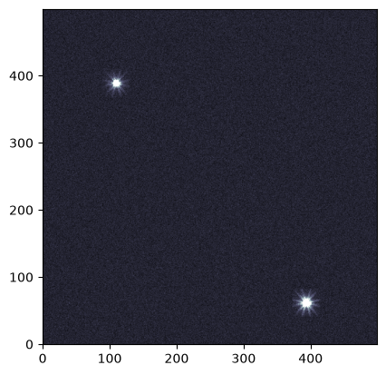
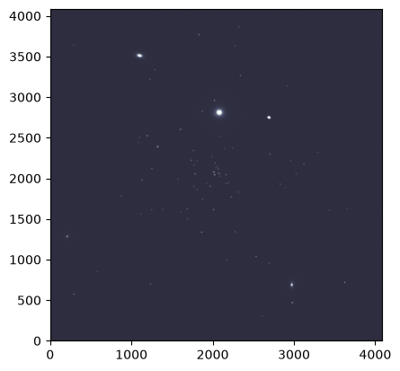
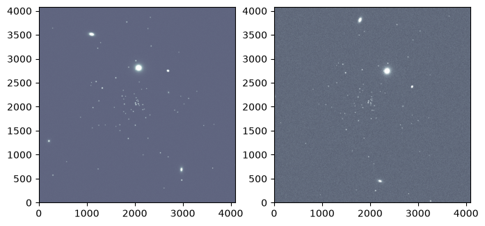
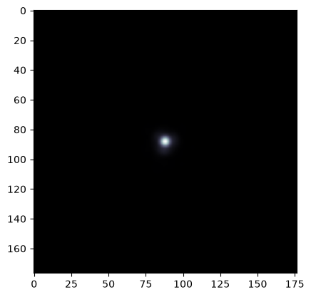
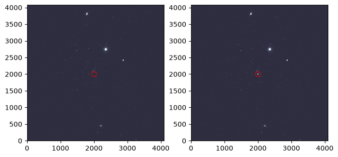

STIPS Tutorial#
Kernel Information and Read-Only Status#
To run this notebook, please select “Roman Research Nexus {VERSION}” kernel at the top right of your window. For example “Roman Research Nexus 2026.1”.
This notebook is read-only. You can run cells and make edits, but you must save changes to a different location. We recommend saving the notebook within your home directory, or to a new folder within your home (e.g. file > save notebook as > my-nbs/nb.ipynb). Note that a directory must exist before you attempt to add a notebook to it.
Introduction#
STIPS, or the Space Telescope Imaging Product Simulator, is a tool developed by STScI for simulating observations of astronomical scenes with the Roman Wide Field Instrument (WFI). Detailed documentation of the tool is available on the RDox pages.
STIPS can generate images of the entire WFI array, which consists of 18 detectors, also called Sensor Chip Assemblies (SCAs). For more information on the WFI detectors and focal plane array please see the RDox documentation. STIPS depends on the Pandeia Exposure time calculator and the STPSF point spread function (PSF) generator to create these simulations. Tutorial notebooks for both Pandeia and STPSF are also available. Users can choose to simulate between 1 and 18 SCAs in any of the WFI imaging filters, insert any number of point or extended sources, and specify a sky background estimate. STIPS will scale input fluxes to observed values, retrieve appropriate PSFs (interpolated to the positions of the sources), and add in additional noise terms.
As described in the Caveats to Using STIPS for Roman, neither pixel saturation nor non-linearity residuals are currently supported.
This notebook is a starter guide to simulating and manipulating scenes with STIPS.
Reference Data#
The cell below will check to ensure ancillary reference files for stips and pandeia packages are installed. If not, it will download the ancillary reference files and install them under your home directory (i.e., ${HOME}/refdata/).
Local Run Settings#
If you want to run the notebook in your local machine, refer to the information in local installation instructions before proceeding with the notebook. The instructions provide important information about setting up your environment, installing dependencies, and adding to your working directory scripts to help with the reference data installation.
Depending on which (if any) reference data are missing, this cell may take several minutes to execute.
On the Roman Research Nexus#
If you are working on the Nexus, then the ancillary reference data are pre-installed and this cell will execute instantly.
import os
import notebook_data_dependencies as ndd
# Download reference data (if necessary)
result = ndd.install_files(packages=['stips', 'stpsf', 'pandeia_data', 'pandeia_psf', 'synphot'])
ndd.setup_env(result)
Did not find pandeia_data data in environment, setting it up...
Downloading and uncompressing file...
Found 1 data URL(s) to download and install...
Working on file 1 out of 1
Update environment variable with the following:
export pandeia_refdata='/home/runner/refdata/pandeia_data-2026.1-roman'
Did not find pandeia_psf data in environment, setting it up...
Downloading and uncompressing file...
Found 1 data URL(s) to download and install...
Working on file 1 out of 1
Update environment variable with the following:
export PSF_DIR='/home/runner/refdata/pandeia_psfs-2026.1-roman'
Did not find stpsf data in environment, setting it up...
Downloading and uncompressing file...
Found 1 data URL(s) to download and install...
Working on file 1 out of 1
Update environment variable with the following:
export STPSF_PATH='/home/runner/refdata/stpsf-data'
Did not find stips data in environment, setting it up...
Downloading and uncompressing file...
Found 1 data URL(s) to download and install...
Working on file 1 out of 1
Update environment variable with the following:
export stips_data='/home/runner/refdata/stips_data'
Did not find synphot data in environment, setting it up...
Downloading and uncompressing file...
Found 9 data URL(s) to download and install...
Working on file 1 out of 9
Working on file 2 out of 9
Working on file 3 out of 9
Working on file 4 out of 9
Working on file 5 out of 9
Working on file 6 out of 9
Working on file 7 out of 9
Working on file 8 out of 9
Working on file 9 out of 9
Update environment variable with the following:
export PYSYN_CDBS='/home/runner/refdata/grp/redcat/trds/'
Reference data paths set to:
pandeia_refdata = /home/runner/refdata/pandeia_data-2026.1-roman
PSF_DIR = /home/runner/refdata/pandeia_psfs-2026.1-roman
STPSF_PATH = /home/runner/refdata/stpsf-data
stips_data = /home/runner/refdata/stips_data
PYSYN_CDBS = /home/runner/refdata/grp/redcat/trds/
CRDS_SERVER_URL = https://roman-crds.stsci.edu (pre-set, not overwritten)
CRDS_CONTEXT = roman-edit (pre-set, not overwritten)
CRDS_OBSERVATORY = roman
CRDS_PATH = /home/runner/crds_cache (pre-set, not overwritten)
Imports#
Besides the STIPS-related imports, the matplotlib imports will help visualize simulated images and astropy.io.fits will help write a FITS table on the fly.
import matplotlib.pyplot as plt
import stips
import yaml
from astropy.io import fits
from stips.astro_image import AstroImage
from stips.observation_module import ObservationModule
from stips.scene_module import SceneModule
from stips.utilities.makePSF import place_source
Environment report#
To verify the existing STIPS installation alongside its associated data files and dependencies, run the cell below. (Find the current software requirements in the STIPS documentation.)
print(stips.__env__report__)
STIPS Version 2.3.1 with Data Version 1.0.10 at /home/runner/refdata/stips_data.
STIPS Grid Generated with STIPS Version 1.1.0.
Pandeia Version 2026.2 with Data Version 2026.1 at /home/runner/refdata/pandeia_data-2026.1-roman and PSF Version 2026.1 at /home/runner/refdata/pandeia_psfs-2026.1-roman.
stpsf Version 2.3.1 with Data Version 2.3.0 at /home/runner/refdata/stpsf-data.
Examples#
Basic STIPS Usage#
This tutorial builds on the concepts introduced in the STIPS Overview article and is designed to walk through the phases of using STIPS at the most introductory level: creating a small scene, designing an observation, and generating a simulated image.
At its most fundamental level, STIPS takes a dictionary of observation and instrument parameters and a source catalog in order to return a simulated image. The source catalog can be either a user-defined input catalog in FITS format or it can be simulated using the STIPS SceneModule class (see below).
In this example, we start by specifying an observation dictionary for an image taken with the F129 filter, using the Detector 1 (WFI01), and with an exposure time of 300 seconds.
Note: We first need to update the path to the PSF cache using a YAML configuration file. A patch to fix the setting of this path in STIPS module calls will be released in the near future.
fix = {'psf_cache_location': os.environ["HOME"]}
with open('./stips_config.yaml', 'w') as file:
yaml.dump(fix, file)
Now we set up the observation dictionary:
obs = {'instrument': 'WFI', 'filters': ['F129'], 'detectors': 1,
'background': 'pandeia', 'observations_id': 42, 'exptime': 300,
'offsets': [{'offset_id': 1, 'offset_centre': False, 'offset_ra': 0.0,
'offset_dec': 0.0, 'offset_pa': 0.0}]
}
Then we feed the dictionary to an instance of the ObservationModule class, while also specifying the central coordinates (90 degrees right ascension and 30 degrees declination) and position angle (0 degrees) as keyword arguments.
obm = ObservationModule(obs, ra=90, dec=30, pa=0, seed=42, cores=6)
2026-11-22 02:26:33,856 INFO: Got offsets as [{'offset_id': 1, 'offset_centre': False, 'offset_ra': 0.0, 'offset_dec': 0.0, 'offset_pa': 0.0}]
2026-11-22 02:26:33,875 INFO: Adding observation with filter F129 and offset (0.0,0.0,0.0)
2026-11-22 02:26:33,876 INFO: Added 1 observations
2026-11-22 02:26:34,118 INFO: WFI with 1 detectors. Central offset (np.float64(2.065830864204697e-13), np.float64(-8.945310041616143e-14), 0)
Create a Simple Astronomical Scene#
The other requirement is an input source catalog. In this case, we generate and input a user-defined catalog. STIPS accepts several types of tables and catalogs in either the IPAC text or FITS BinTable format. This example uses a Mixed Catalog, which requires the following columns:
id: Object IDra: Right ascension (RA), in degreesdec: Declination (DEC), in degreesflux: Flux, inunits(defined below)type: Approximation used to profile a source. Options are'sersic'(for extended sources) orpointn: Sersic profile indexphi: Position angle of the Sersic profle’s major axis, in degreesratio: Ratio of the Sersic profile’s major and minor axesSince
n,phi,ratioonly apply to extended sources, they are ignored in rows wheretypeis set to'point'.
notes: Optional per-source commentsunits: One of‘p’for photons/s,‘e’for electrons/s,‘j’for Jansky, or‘c’for counts/s
Below, we create a catalog containing two sources located near the central coordinates specified in the ObservationModule.
cols = [
fits.Column(name='id', array=[1, 2], format='K'),
fits.Column(name='ra', array=[90.02, 90.03], format='D'),
fits.Column(name='dec', array=[29.98, 29.97], format='D'),
fits.Column(name='flux', array=[0.00023, 0.0004], format='D'),
fits.Column(name='type', array=['point', 'point'], format='8A'),
fits.Column(name='n', array=[0, 0], format='D'),
fits.Column(name='re', array=[0, 0], format='D'),
fits.Column(name='phi', array=[0, 0], format='D'),
fits.Column(name='ratio', array=[0, 0], format='D'),
fits.Column(name='notes', array=['', ''], format='8A'),
fits.Column(name='units', array=['j', 'j'], format='8A')
]
Next, we save the columns as a FITS table in the BinTable format and assign header keys that specify the filter and catalog type:
hdut = fits.BinTableHDU.from_columns(cols)
hdut.header['TYPE'] = 'mixed'
hdut.header['FILTER'] = 'F129'
And we save the catalog locally:
cat_file = 'catalog.fits'
hdut.writeto(cat_file, overwrite=True)
Simulate an Image#
With the observation module and source catalog in tow, STIPS can take over the image simulation process. First, we trigger the initialization of a new observation:
obm.nextObservation()
2026-11-22 02:26:34,290 INFO: Initializing Observation 0 of 1
2026-11-22 02:26:34,290 INFO: Observation Filter is F129
2026-11-22 02:26:34,291 INFO: Observation (RA,DEC) = (90.0,30.0) with PA=0.0
2026-11-22 02:26:34,291 INFO: Resetting
2026-11-22 02:26:34,490 INFO: Returning background 0.10970060309254233 for 'pandeia'
2026-11-22 02:26:34,491 INFO: Creating Detector WFI01 with (RA,DEC,PA) = (90.0,30.0,0.0)
2026-11-22 02:26:34,491 INFO: Creating Detector WFI01 with offset (0.0,0.0)
2026-11-22 02:26:34,499 INFO: Creating Instrument with Configuration {'aperture': 'imaging', 'detector': 'wfi01', 'disperser': None, 'filter': 'f129', 'instrument': 'wfi', 'mode': 'imaging'}
2026-11-22 02:26:34,522 INFO: WFI01: (RA, DEC, PA) := (90.0, 30.0, 0.0), detected as (90.0, 30.0, 0.0)
2026-11-22 02:26:34,522 INFO: Detector WFI01 created
2026-11-22 02:26:34,522 INFO: Reset Instrument
Creating pandeia instrument roman.wfi.imaging
0
Next, we simulate an image containing the sources from the catalog we created earlier. Then, we add error residuals to the image:
cat_name = obm.addCatalogue(cat_file)
2026-11-22 02:26:34,534 INFO: Running catalogue catalog.fits
2026-11-22 02:26:34,534 INFO: Adding catalogue catalog.fits
2026-11-22 02:26:34,539 INFO: Converting mixed catalogue
2026-11-22 02:26:34,540 INFO: Preparing output table
2026-11-22 02:26:34,548 INFO: Converting chunk 2
2026-11-22 02:26:34,554 INFO: Finished converting catalogue to internal format
2026-11-22 02:26:34,555 INFO: Adding catalogue to detector WFI01
2026-11-22 02:26:34,555 INFO: Adding catalogue catalog_42_conv_F129.fits to AstroImage WFI01
2026-11-22 02:26:34,564 INFO: Determining pixel co-ordinates
2026-11-22 02:26:34,564 INFO: Keeping 2 items
2026-11-22 02:26:34,565 INFO: Writing 2 stars
2026-11-22 02:26:34,565 INFO: Adding 2 point sources to AstroImage WFI01
2026-11-22 02:26:34,569 INFO: PSF File psf_WFI_2.3.1_F129_wfi01.fits to be put at /home/runner/psf_cache
2026-11-22 02:26:34,569 INFO: PSF File is /home/runner/psf_cache/psf_WFI_2.3.1_F129_wfi01.fits
2026-11-22 02:26:36,535 INFO: WFI01: Starting 3x3 PSF Grid creation at Sun Nov 22 02:26:36 2026
Running instrument: WFI, filter: F129
Running detector: WFI01
Position 1/9: (0, 0) pixels
Attempted to get aberrations at field point (0, 0) which is outside the range of the reference data; approximating to nearest input grid point
Attempted to get aberrations at field point (0, 0) which is outside the range of the reference data; approximating to nearest input grid point
Attempted to get aberrations at field point (0, 0) which is outside the range of the reference data; approximating to nearest input grid point
Attempted to get aberrations at field point (0, 0) which is outside the range of the reference data; approximating to nearest input grid point
Attempted to get aberrations at field point (0, 0) which is outside the range of the reference data; approximating to nearest input grid point
Attempted to get aberrations at field point (0, 0) which is outside the range of the reference data; approximating to nearest input grid point
Attempted to get aberrations at field point (0, 0) which is outside the range of the reference data; approximating to nearest input grid point
Attempted to get aberrations at field point (0, 0) which is outside the range of the reference data; approximating to nearest input grid point
Attempted to get aberrations at field point (0, 0) which is outside the range of the reference data; approximating to nearest input grid point
Attempted to get aberrations at field point (0, 0) which is outside the range of the reference data; approximating to nearest input grid point
Position 1/9 centroid: (np.float64(88.46542007700856), np.float64(87.95847366981151))
Position 2/9: (0, 2048) pixels
Attempted to get aberrations at field point (0, 4095) which is outside the range of the reference data; approximating to nearest input grid point
Position 2/9 centroid: (np.float64(88.52519212541732), np.float64(87.95220067463512))
Position 3/9: (0, 4095) pixels
Attempted to get aberrations at field point (0, 4095) which is outside the range of the reference data; approximating to nearest input grid point
Attempted to get aberrations at field point (0, 4095) which is outside the range of the reference data; approximating to nearest input grid point
Attempted to get aberrations at field point (0, 4095) which is outside the range of the reference data; approximating to nearest input grid point
Attempted to get aberrations at field point (0, 4095) which is outside the range of the reference data; approximating to nearest input grid point
Attempted to get aberrations at field point (0, 4095) which is outside the range of the reference data; approximating to nearest input grid point
Attempted to get aberrations at field point (0, 4095) which is outside the range of the reference data; approximating to nearest input grid point
Attempted to get aberrations at field point (0, 4095) which is outside the range of the reference data; approximating to nearest input grid point
Attempted to get aberrations at field point (0, 4095) which is outside the range of the reference data; approximating to nearest input grid point
Attempted to get aberrations at field point (0, 4095) which is outside the range of the reference data; approximating to nearest input grid point
Attempted to get aberrations at field point (2048, 0) which is outside the range of the reference data; approximating to nearest interpolated point (np.float64(2047.9997807826962), np.float64(17.4786934794725))
Position 3/9 centroid: (np.float64(88.52573542582256), np.float64(87.94983673036126))
Position 4/9: (2048, 0) pixels
Attempted to get aberrations at field point (2048, 0) which is outside the range of the reference data; approximating to nearest interpolated point (np.float64(2047.9997807826962), np.float64(17.4786934794725))
Attempted to get aberrations at field point (2048, 0) which is outside the range of the reference data; approximating to nearest interpolated point (np.float64(2047.9997807826962), np.float64(17.4786934794725))
Attempted to get aberrations at field point (2048, 0) which is outside the range of the reference data; approximating to nearest interpolated point (np.float64(2047.9997807826962), np.float64(17.4786934794725))
Attempted to get aberrations at field point (2048, 0) which is outside the range of the reference data; approximating to nearest interpolated point (np.float64(2047.9997807826962), np.float64(17.4786934794725))
Attempted to get aberrations at field point (2048, 0) which is outside the range of the reference data; approximating to nearest interpolated point (np.float64(2047.9997807826962), np.float64(17.4786934794725))
Attempted to get aberrations at field point (2048, 0) which is outside the range of the reference data; approximating to nearest interpolated point (np.float64(2047.9997807826962), np.float64(17.4786934794725))
Attempted to get aberrations at field point (2048, 0) which is outside the range of the reference data; approximating to nearest interpolated point (np.float64(2047.9997807826962), np.float64(17.4786934794725))
Attempted to get aberrations at field point (2048, 0) which is outside the range of the reference data; approximating to nearest interpolated point (np.float64(2047.9997807826962), np.float64(17.4786934794725))
Attempted to get aberrations at field point (2048, 0) which is outside the range of the reference data; approximating to nearest interpolated point (np.float64(2047.9997807826962), np.float64(17.4786934794725))
Position 4/9 centroid: (np.float64(88.4674654157236), np.float64(87.87892810002897))
Position 5/9: (2048, 2048) pixels
Attempted to get aberrations at field point (2048, 4095) which is outside the range of the reference data; approximating to nearest interpolated point (np.float64(2048.001903254884), np.float64(4068.7573836664606))
Position 5/9 centroid: (np.float64(88.49394123542778), np.float64(87.8578045256427))
Position 6/9: (2048, 4095) pixels
Attempted to get aberrations at field point (2048, 4095) which is outside the range of the reference data; approximating to nearest interpolated point (np.float64(2048.001903254884), np.float64(4068.7573836664606))
Attempted to get aberrations at field point (2048, 4095) which is outside the range of the reference data; approximating to nearest interpolated point (np.float64(2048.001903254884), np.float64(4068.7573836664606))
Attempted to get aberrations at field point (2048, 4095) which is outside the range of the reference data; approximating to nearest interpolated point (np.float64(2048.001903254884), np.float64(4068.7573836664606))
Attempted to get aberrations at field point (2048, 4095) which is outside the range of the reference data; approximating to nearest interpolated point (np.float64(2048.001903254884), np.float64(4068.7573836664606))
Attempted to get aberrations at field point (2048, 4095) which is outside the range of the reference data; approximating to nearest interpolated point (np.float64(2048.001903254884), np.float64(4068.7573836664606))
Attempted to get aberrations at field point (2048, 4095) which is outside the range of the reference data; approximating to nearest interpolated point (np.float64(2048.001903254884), np.float64(4068.7573836664606))
Attempted to get aberrations at field point (2048, 4095) which is outside the range of the reference data; approximating to nearest interpolated point (np.float64(2048.001903254884), np.float64(4068.7573836664606))
Attempted to get aberrations at field point (2048, 4095) which is outside the range of the reference data; approximating to nearest interpolated point (np.float64(2048.001903254884), np.float64(4068.7573836664606))
Attempted to get aberrations at field point (2048, 4095) which is outside the range of the reference data; approximating to nearest interpolated point (np.float64(2048.001903254884), np.float64(4068.7573836664606))
Attempted to get aberrations at field point (4095, 0) which is outside the range of the reference data; approximating to nearest input grid point
Position 6/9 centroid: (np.float64(88.47441195180086), np.float64(87.80792464877655))
Position 7/9: (4095, 0) pixels
Attempted to get aberrations at field point (4095, 0) which is outside the range of the reference data; approximating to nearest input grid point
Attempted to get aberrations at field point (4095, 0) which is outside the range of the reference data; approximating to nearest input grid point
Attempted to get aberrations at field point (4095, 0) which is outside the range of the reference data; approximating to nearest input grid point
Attempted to get aberrations at field point (4095, 0) which is outside the range of the reference data; approximating to nearest input grid point
Attempted to get aberrations at field point (4095, 0) which is outside the range of the reference data; approximating to nearest input grid point
Attempted to get aberrations at field point (4095, 0) which is outside the range of the reference data; approximating to nearest input grid point
Attempted to get aberrations at field point (4095, 0) which is outside the range of the reference data; approximating to nearest input grid point
Attempted to get aberrations at field point (4095, 0) which is outside the range of the reference data; approximating to nearest input grid point
Attempted to get aberrations at field point (4095, 0) which is outside the range of the reference data; approximating to nearest input grid point
Attempted to get aberrations at field point (4095, 2048) which is outside the range of the reference data; approximating to nearest interpolated point (np.float64(4068.39115690253), np.float64(2047.9135201378836))
Position 7/9 centroid: (np.float64(88.45297378090109), np.float64(87.76698402842449))
Position 8/9: (4095, 2048) pixels
Attempted to get aberrations at field point (4095, 2048) which is outside the range of the reference data; approximating to nearest interpolated point (np.float64(4068.39115690253), np.float64(2047.9135201378836))
Attempted to get aberrations at field point (4095, 2048) which is outside the range of the reference data; approximating to nearest interpolated point (np.float64(4068.39115690253), np.float64(2047.9135201378836))
Attempted to get aberrations at field point (4095, 2048) which is outside the range of the reference data; approximating to nearest interpolated point (np.float64(4068.39115690253), np.float64(2047.9135201378836))
Attempted to get aberrations at field point (4095, 2048) which is outside the range of the reference data; approximating to nearest interpolated point (np.float64(4068.39115690253), np.float64(2047.9135201378836))
Attempted to get aberrations at field point (4095, 2048) which is outside the range of the reference data; approximating to nearest interpolated point (np.float64(4068.39115690253), np.float64(2047.9135201378836))
Attempted to get aberrations at field point (4095, 2048) which is outside the range of the reference data; approximating to nearest interpolated point (np.float64(4068.39115690253), np.float64(2047.9135201378836))
Attempted to get aberrations at field point (4095, 2048) which is outside the range of the reference data; approximating to nearest interpolated point (np.float64(4068.39115690253), np.float64(2047.9135201378836))
Attempted to get aberrations at field point (4095, 2048) which is outside the range of the reference data; approximating to nearest interpolated point (np.float64(4068.39115690253), np.float64(2047.9135201378836))
Attempted to get aberrations at field point (4095, 2048) which is outside the range of the reference data; approximating to nearest interpolated point (np.float64(4068.39115690253), np.float64(2047.9135201378836))
Attempted to get aberrations at field point (4095, 4095) which is outside the range of the reference data; approximating to nearest input grid point
Position 8/9 centroid: (np.float64(88.41040707421604), np.float64(87.71674631768808))
Position 9/9: (4095, 4095) pixels
Attempted to get aberrations at field point (4095, 4095) which is outside the range of the reference data; approximating to nearest input grid point
Attempted to get aberrations at field point (4095, 4095) which is outside the range of the reference data; approximating to nearest input grid point
Attempted to get aberrations at field point (4095, 4095) which is outside the range of the reference data; approximating to nearest input grid point
Attempted to get aberrations at field point (4095, 4095) which is outside the range of the reference data; approximating to nearest input grid point
Attempted to get aberrations at field point (4095, 4095) which is outside the range of the reference data; approximating to nearest input grid point
Attempted to get aberrations at field point (4095, 4095) which is outside the range of the reference data; approximating to nearest input grid point
Attempted to get aberrations at field point (4095, 4095) which is outside the range of the reference data; approximating to nearest input grid point
Attempted to get aberrations at field point (4095, 4095) which is outside the range of the reference data; approximating to nearest input grid point
Attempted to get aberrations at field point (4095, 4095) which is outside the range of the reference data; approximating to nearest input grid point
2026-11-22 02:27:20,240 INFO: WFI01: Finished PSF Grid creation at Sun Nov 22 02:27:20 2026
Position 9/9 centroid: (np.float64(88.4600243837143), np.float64(87.6560912154923))
Saving file: /home/runner/psf_cache/psf_WFI_2.3.1_F129_wfi01.fits
2026-11-22 02:27:20,736 INFO: Adding point source 1 to AstroImage 2631.9672457028046,1410.503966182148
2026-11-22 02:27:20,741 INFO: Adding point source 2 to AstroImage 2915.5365753799083,1083.2929624680437
2026-11-22 02:27:20,754 INFO: Added catalogue catalog_42_conv_F129.fits to AstroImage WFI01
2026-11-22 02:27:20,755 INFO: Finished catalogue catalog.fits
obm.addError()
2026-11-22 02:27:20,759 INFO: Adding Error
2026-11-22 02:27:20,759 INFO: Adding residual error
2026-11-22 02:27:20,777 INFO: WFI01: (RA, DEC, PA) := (0.0, 0.0, 0.0), detected as (0.0, 0.0, 0.0)
2026-11-22 02:27:20,975 INFO: WFI01: (RA, DEC, PA) := (0.0, 0.0, 0.0), detected as (0.0, 0.0, 0.0)
2026-11-22 02:27:20,976 INFO: Created AstroImage WFI01 and imported data from FITS file err_flat_wfi.fits
2026-11-22 02:27:20,995 INFO: WFI01: (RA, DEC, PA) := (0.0, 0.0, 0.0), detected as (0.0, 0.0, 0.0)
2026-11-22 02:27:21,196 INFO: WFI01: (RA, DEC, PA) := (0.0, 0.0, 0.0), detected as (0.0, 0.0, 0.0)
2026-11-22 02:27:21,196 INFO: Created AstroImage WFI01 and imported data from FITS file err_rdrk_wfi.fits
2026-11-22 02:27:21,201 INFO: Adding error to detector WFI01
2026-11-22 02:27:21,201 INFO: Adding background
2026-11-22 02:27:21,347 INFO: Returning background 0.10970060309254233 for 'pandeia'
2026-11-22 02:27:21,348 INFO: Background is 0.10970060309254233 counts/s/pixel
2026-11-22 02:27:21,483 INFO: Returning background 0.10970060309254233 for 'pandeia'
2026-11-22 02:27:21,483 INFO: Added background of 0.10970060309254233 counts/s/pixel
2026-11-22 02:27:21,503 INFO: Inserting correct exposure time
2026-11-22 02:27:21,507 INFO: Cropping Down to base Detector Size
2026-11-22 02:27:21,507 INFO: Cropping convolved image down to detector size
2026-11-22 02:27:21,508 INFO: Taking [22:4110, 22:4110]
2026-11-22 02:27:21,520 INFO: WFI01: (RA, DEC, PA) := (90.0, 30.0, 0.0), detected as (90.0, 30.0, 0.0)
2026-11-22 02:27:21,521 INFO: Adding poisson noise
2026-11-22 02:27:21,855 INFO: Adding Poisson Noise with mean 0.0004218680917726479 and standard deviation 5.7457238649491105
2026-11-22 02:27:21,857 INFO: Adding readnoise
2026-11-22 02:27:22,136 INFO: Adding readnoise with mean 0.0006565025541931391 and STDEV 12.00109577178955
2026-11-22 02:27:22,137 INFO: Adding flatfield residual
2026-11-22 02:27:22,183 INFO: Adding Flatfield residual with mean 1.0097910165786743 and standard deviation 0.0006765797734260559
2026-11-22 02:27:22,183 INFO: Adding dark residual
2026-11-22 02:27:22,230 INFO: Adding Dark residual with mean 0.20807769894599915 and standard deviation 1.1006208658218384
2026-11-22 02:27:22,231 INFO: Adding cosmic ray residual
2026-11-22 02:27:22,812 INFO: Adding Cosmic Ray residual with mean 0.0847659632563591 and standard deviation 1.9229004383087158
2026-11-22 02:27:22,816 INFO: Finished adding error
2026-11-22 02:27:22,817 INFO: Finished Adding Error
We finish by saving the outputs to a FITS file. The finalize() method of the ObservationModule object can also return a full field of view mosaic and a list of the simulation’s initial parameters.
fits_file_1, _, params_1 = obm.finalize(mosaic=False)
print(f"Output FITS file is {fits_file_1}")
2026-11-22 02:27:22,822 INFO: Converting to FITS file
2026-11-22 02:27:22,823 INFO: Converting detector WFI01 to FITS extension
2026-11-22 02:27:22,823 INFO: Creating Extension HDU from AstroImage WFI01
2026-11-22 02:27:22,824 INFO: Created Extension HDU from AstroImage WFI01
2026-11-22 02:27:22,861 INFO: Created FITS file /home/runner/work/roman_notebooks/roman_notebooks/notebooks/stips/sim_42_0.fits
Output FITS file is /home/runner/work/roman_notebooks/roman_notebooks/notebooks/stips/sim_42_0.fits
for prm in params_1:
print(prm)
Instrument: WFI
Filters: F129
Pixel Scale: (0.110,0.110) arcsec/pix
Pivot Wavelength: 1.290 um
Background Type: Pandeia background rate
Exposure Time: 300.0s
Input Unit: counts/s
Added Flatfield Residual: True
Added Dark Current Residual: True
Added Cosmic Ray Residual: True
Added Readnoise: True
Added Poisson Noise: True
Detector X size: 4088
Detector Y size: 4088
Random Seed: 42
img_1 = fits.getdata(fits_file_1)[1000:1500, 2500:3000]
plt.imshow(img_1, vmax=1.5, origin='lower', cmap='bone')
<matplotlib.image.AxesImage at 0x7de756618440>

Generate Scenes Using STIPS Built-In Functions#
STIPS can simulate scenes by importing pre-existing catalogs (as in the first example) or by using built-in functionality that generates collections of stars or galaxies based on user-specified parameters. Below, we will use the STIPS SceneModule to generate a stellar population and a galactic population.
First, we specify a set of parameters that will be used in both scenes (RA, DEC, ID) and initialize two SceneModule instances, one for the stellar population and one for the galaxy population:
obs_prefix_1 = 'notebook_example1'
obs_ra = 150.0
obs_dec = -2.5
scm_stellar = SceneModule(out_prefix=obs_prefix_1, ra=obs_ra, dec=obs_dec)
scm_galactic = SceneModule(out_prefix=obs_prefix_1, ra=obs_ra, dec=obs_dec)
Log level: INFO
Log level: INFO
Create a Stellar Population#
Now we create a dictionary containing the parameters of the desired stellar population to pass to the SceneModule instance’s CreatePopulation() method. The following parameters are needed to define a stellar population:
Number of point sources
Upper and lower limit of the age of the stars (in years)
Upper and lower limit of the metallicity of the stars
Initial Mass Function
Binary fraction
Clustering (True/False)
Distribution type (Uniform, Inverse power-law)
Total radius of the population
Distance from the population
Offset RA and DEC from the center of the scene being created
A full accounting of each dictionary entry’s meaning can be found in the docstring of the CreatePopulation() method:
help(scm_stellar.CreatePopulation)
Help on method CreatePopulation in module stips.scene_module.scene_module:
CreatePopulation(pop, id=0) method of stips.scene_module.scene_module.SceneModule instance
Generate a stellar population.
Output list will have these columns:
# ID
# RA
# DEC
# Distance
# Age
# Metallicity
# Mass
# Count Rate (in the chosen instrument/filter), Absolute
# Count Rate (in the chosen instrument/filter), Observed
Parameters
----------
self: obj
Class instance.
pop: dictionary
Information about the population. Includes:
n_stars: int
Number of stars
age_low,age_high: floating point
Minimum and maximum ages.
z_low,z_high: floating point
Minimum and maximum metallicities.
imf: string
Initial Mass Function for the population
alpha: float
Exponent (if imf = 'powerlaw')
binary_fraction: float
Binary Fraction
distribution: string
Stellar distribution in the sky (e.g. power law, inverse power law, uniform, etc.)
clustered: bool
Cluster higher masses to centre?
radius: float
Radius in (units)
radius_units: string
Units of radius (above)
distance_low,distance_high: floating point
Minimum and maximum distance (in kpc) of the 'cluster'
offset_ra,offset_dec: floating point
Offset of the cluster from the scene centre in arcseconds
Returns
-------
outList: string
The catalogue file produced
stellar_parameters = {'n_stars': 100, 'age_low': 7.5e12, 'age_high': 7.5e12,
'z_low': -2.0, 'z_high': -2.0, 'imf': 'salpeter',
'alpha': -2.35, 'binary_fraction': 0.1,
'distribution': 'invpow', 'clustered': True,
'radius': 100.0, 'radius_units': 'pc',
'distance_low': 20.0, 'distance_high': 20.0,
'offset_ra': 0.0, 'offset_dec': 0.0
}
We pass the dictionary to the stellar SceneModule instance’s CreatePopulation() method. Running the method will save the newly-generated population locally.
stellar_cat_file = scm_stellar.CreatePopulation(stellar_parameters)
print(f"Stellar population saved to file {stellar_cat_file}")
2026-11-22 02:27:23,024 INFO: Creating catalogue /home/runner/work/roman_notebooks/roman_notebooks/notebooks/stips/notebook_example1_stars_000.fits
2026-11-22 02:27:23,025 INFO: Creating age and metallicity numbers
2026-11-22 02:27:23,025 INFO: Created age and metallicity numbers
2026-11-22 02:27:23,025 INFO: Creating stars
2026-11-22 02:27:23,026 INFO: Age 1.35e+10
2026-11-22 02:27:23,026 INFO: Metallicity -2.000000
2026-11-22 02:27:23,026 INFO: Creating 100 stars
2026-11-22 02:27:23,217 INFO: Creating 100 objects, max radius 100.0, function invpow, scale 2.8
2026-11-22 02:27:23,247 INFO: Chunk 1: 110 stars
2026-11-22 02:27:23,257 INFO: Done creating catalogue
Stellar population saved to file /home/runner/work/roman_notebooks/roman_notebooks/notebooks/stips/notebook_example1_stars_000.fits
Create a Galactic Population#
Repeat the population generation process, now by creating a dictionary containing parameters of a desired galactic population. The following paramters are needed to define a galaxy population:
Number of galaxies
Upper and lower limit of the redshift
Upper and lower limit of the galactic radii
Range of V-band surface brightness magnitudes
Clustering (True/False)
Distribution type (Uniform, Inverse power-law)
Radius of the distribution
Offset RA and DEC from the center of the scene being created
A full accounting of each dictionary entry’s meaning can be found in the docstring of the CreateGalaxies() method:
help(scm_galactic.CreateGalaxies)
Help on method CreateGalaxies in module stips.scene_module.scene_module:
CreateGalaxies(gals, id=0) method of stips.scene_module.scene_module.SceneModule instance
Generate galaxies list.
Output list will have these columns:
# ID
# RA
# DEC
# Redshift
# Model
# Age
# Profile
# Half-flux_radius
# Axial_ratio
# Position_angle
# Johnson,V absolute
# Johnson,V apparent
Parameters
----------
self: obj
Class instance.
gals: dictionary
Information about the galaxies. Includes:
n_gals: int
Number of galaxies
z_low,z_high: float
Minimum and maximum redshifts (converted to distances?).
rad_low,rad_high: float
Minimum and maximum galactic half-light radii (in arcseconds)
sb_v_low, sb_v_high: float
Minimum and maximum V-band average surface brightness within rad
distribution: string
Stellar distribution in the sky (e.g. power law, inverse power law, uniform, etc.)
clustered: bool
Cluster higher masses to centre?
radius: float
Radius in (units)
radius_units: string
Units of radius (above)
offset_ra,offset_dec: float
Offset of cluster from scene centre in mas
Returns
-------
outList: string
The catalogue file produced
We pass the dictionary to the galaxy SceneModule instance’s CreateGalaxies() method, and save the result locally:
galaxy_parameters = {'n_gals': 10, 'z_low': 0.0, 'z_high': 0.2,
'rad_low': 0.01, 'rad_high': 2.0,
'sb_v_low': 30.0, 'sb_v_high': 25.0,
'distribution': 'uniform', 'clustered': False,
'radius': 200.0, 'radius_units': 'arcsec',
'offset_ra': 0.0, 'offset_dec': 0.0
}
galaxy_cat_file = scm_galactic.CreateGalaxies(galaxy_parameters)
print(f"Galaxy population saved to file {galaxy_cat_file}")
2026-11-22 02:27:23,268 INFO: Creating catalogue /home/runner/work/roman_notebooks/roman_notebooks/notebooks/stips/notebook_example1_gals_000.fits
2026-11-22 02:27:23,269 INFO: Wrote preamble
2026-11-22 02:27:23,269 INFO: Parameters are: {'n_gals': 10, 'z_low': 0.0, 'z_high': 0.2, 'rad_low': 0.01, 'rad_high': 2.0, 'sb_v_low': 30.0, 'sb_v_high': 25.0, 'distribution': 'uniform', 'clustered': False, 'radius': 200.0, 'radius_units': 'arcsec', 'offset_ra': 0.0, 'offset_dec': 0.0}
2026-11-22 02:27:23,270 INFO: Making Co-ordinates
2026-11-22 02:27:23,270 INFO: Creating 10 objects, max radius 200.0, function uniform, scale 2.8
2026-11-22 02:27:23,270 INFO: Converting Co-ordinates into RA,DEC
2026-11-22 02:27:23,278 INFO: Done creating catalogue
Galaxy population saved to file /home/runner/work/roman_notebooks/roman_notebooks/notebooks/stips/notebook_example1_gals_000.fits
Set up an Observation (First Pointing)#
Once we’ve created a scene, we can use STIPS to simulate as many exposures of it in as many orientations as we’d like. In STIPS, a single telescope pointing is called an offset, and a collection of exposures is an observation.
We start this subsection by creating a single offset that is dithered by 2 degrees in right ascension and rotated by 0.5 degrees in position angle from the center of the scene.
offset_1 = {'offset_id': 1, 'offset_centre': False,
# True would center each detector on the same on-sky point
'offset_ra': 2.0, 'offset_dec': 0.0, 'offset_pa': 0.5
}
The offset information is contained within an observation that is taken with the F129 filter, uses detectors WFI01 through WFI03, and has an exposure time of 1500 seconds. We also apply distortion and specify a sky background of 0.24 counts/s/pixel.
observation_parameters_1 = {'instrument': 'WFI', 'filters': ['F129'],
'detectors': 3, 'distortion': True,
'background': 0.24, 'observations_id': 1,
'exptime': 1500, 'offsets': [offset_1]
}
STIPS can also apply various types of error residuals to the observation. Here, we only include residuals from flat-fields and the dark current.
residuals_1 = {'residual_flat': True, 'residual_dark': True,
'residual_cosmic': False, 'residual_poisson': False,
'residual_readnoise': False
}
Next, we feed the observation dictionary to an instance of the ObservationModule class, alongside the observation ID, right ascension, and declination specified earlier in this example.
obm_1 = ObservationModule(observation_parameters_1, residual=residuals_1,
out_prefix=obs_prefix_1, ra=obs_ra, dec=obs_dec)
2026-11-22 02:27:23,293 INFO: Got offsets as [{'offset_id': 1, 'offset_centre': False, 'offset_ra': 2.0, 'offset_dec': 0.0, 'offset_pa': 0.5}]
2026-11-22 02:27:23,305 INFO: Adding observation with filter F129 and offset (2.0,0.0,0.5)
2026-11-22 02:27:23,305 INFO: Added 1 observations
2026-11-22 02:27:23,419 INFO: WFI with 3 detectors. Central offset (np.float64(1.7907664211548176e-13), np.float64(-8.945310041616143e-14), 0)
We call the ObservationModule object’s nextObservation() method to move to the first offset/filter combination (offset_1 and F129) contained in the object.
obm_1.nextObservation()
2026-11-22 02:27:23,423 INFO: Initializing Observation 0 of 1
2026-11-22 02:27:23,424 INFO: Observation Filter is F129
2026-11-22 02:27:23,424 INFO: Observation (RA,DEC) = (150.00055555555556,-2.5) with PA=0.5
2026-11-22 02:27:23,424 INFO: Resetting
2026-11-22 02:27:23,424 INFO: Returning background 0.24.
2026-11-22 02:27:23,424 INFO: Creating Detector WFI01 with (RA,DEC,PA) = (150.00055555555556,-2.5,0.5)
2026-11-22 02:27:23,425 INFO: Creating Detector WFI01 with offset (0.0,0.0)
2026-11-22 02:27:23,432 INFO: Creating Instrument with Configuration {'aperture': 'imaging', 'detector': 'wfi01', 'disperser': None, 'filter': 'f129', 'instrument': 'wfi', 'mode': 'imaging'}
2026-11-22 02:27:23,455 INFO: WFI01: (RA, DEC, PA) := (150.00055555555556, -2.5, 0.5), detected as (150.00055555555556, -2.5, 0.5000000000001229)
2026-11-22 02:27:23,455 INFO: Detector WFI01 created
2026-11-22 02:27:23,455 INFO: Creating Detector WFI02 with (RA,DEC,PA) = (150.00063361633363,-2.6463679052675504,0.5)
2026-11-22 02:27:23,455 INFO: Creating Detector WFI02 with offset (7.806077806812047e-05,-0.1463679052675503)
Creating pandeia instrument roman.wfi.imaging
2026-11-22 02:27:23,462 INFO: WFI02: (RA, DEC, PA) := (150.00063361633363, -2.6463679052675504, 0.5), detected as (150.00063361633363, -2.6463679052675504, 0.5000000000001229)
2026-11-22 02:27:23,462 INFO: Detector WFI02 created
2026-11-22 02:27:23,462 INFO: Creating Detector WFI03 with (RA,DEC,PA) = (150.00076976694686,-2.777285221181246,0.5)
2026-11-22 02:27:23,463 INFO: Creating Detector WFI03 with offset (0.00021421139128143576,-0.2772852211812461)
2026-11-22 02:27:23,469 INFO: WFI03: (RA, DEC, PA) := (150.00076976694686, -2.777285221181246, 0.5), detected as (150.00076976694686, -2.777285221181246, 0.5000000000001229)
2026-11-22 02:27:23,469 INFO: Detector WFI03 created
2026-11-22 02:27:23,470 INFO: Reset Instrument
0
Now that the observation is fully set up, we add the stellar and galactic populations to it. (Please note that each population may take about a minute to load.)
output_stellar_catalogs_1 = obm_1.addCatalogue(stellar_cat_file)
output_galaxy_catalogs_1 = obm_1.addCatalogue(galaxy_cat_file)
print(f"Output Catalogs are {output_stellar_catalogs_1} and "
f"{output_galaxy_catalogs_1}.")
2026-11-22 02:27:23,474 INFO: Running catalogue /home/runner/work/roman_notebooks/roman_notebooks/notebooks/stips/notebook_example1_stars_000.fits
2026-11-22 02:27:23,474 INFO: Adding catalogue /home/runner/work/roman_notebooks/roman_notebooks/notebooks/stips/notebook_example1_stars_000.fits
2026-11-22 02:27:23,481 INFO: Converting phoenix catalogue
2026-11-22 02:27:23,481 INFO: Preparing output table
2026-11-22 02:27:23,493 INFO: Converting chunk 2
2026-11-22 02:27:23,494 INFO: Converting Phoenix Table to Internal format
2026-11-22 02:27:23,494 INFO: 1 datasets
2026-11-22 02:27:23,678 INFO: Finished converting catalogue to internal format
2026-11-22 02:27:23,679 INFO: Adding catalogue to detector WFI01
2026-11-22 02:27:23,679 INFO: Adding catalogue notebook_example1_stars_000_01_conv_F129.fits to AstroImage WFI01
2026-11-22 02:27:23,688 INFO: Determining pixel co-ordinates
2026-11-22 02:27:23,688 INFO: Keeping 73 items
2026-11-22 02:27:23,689 INFO: Writing 73 stars
2026-11-22 02:27:23,689 INFO: Adding 73 point sources to AstroImage WFI01
2026-11-22 02:27:23,693 INFO: PSF File psf_WFI_2.3.1_F129_wfi01.fits to be put at /home/runner/psf_cache
2026-11-22 02:27:23,693 INFO: PSF File is /home/runner/psf_cache/psf_WFI_2.3.1_F129_wfi01.fits
2026-11-22 02:27:24,166 INFO: Adding point source 1 to AstroImage 2083.1058392331856,2167.6665247240667
2026-11-22 02:27:24,171 INFO: Adding point source 2 to AstroImage 2053.0486455374166,2208.8710302210593
2026-11-22 02:27:24,176 INFO: Adding point source 3 to AstroImage 2189.7208450231624,1959.8092073206046
2026-11-22 02:27:24,181 INFO: Adding point source 4 to AstroImage 2092.487343682054,2137.8747760485467
2026-11-22 02:27:24,186 INFO: Adding point source 5 to AstroImage 2102.5851401005534,2076.1601994011603
2026-11-22 02:27:24,190 INFO: Adding point source 6 to AstroImage 1947.3497315804786,1961.043444749693
2026-11-22 02:27:24,195 INFO: Adding point source 7 to AstroImage 1793.083323331691,2182.9816926313747
2026-11-22 02:27:24,199 INFO: Adding point source 8 to AstroImage 1992.4828044404,1922.9315641354306
2026-11-22 02:27:24,203 INFO: Adding point source 9 to AstroImage 2046.836178495134,2065.1585094272887
2026-11-22 02:27:24,208 INFO: Adding point source 10 to AstroImage 1806.3265929524096,2077.0178274768723
2026-11-22 02:27:24,212 INFO: Adding point source 11 to AstroImage 2012.1543626696512,2290.5385194834316
2026-11-22 02:27:24,216 INFO: Adding point source 12 to AstroImage 1759.2194560344183,2244.8925039411715
2026-11-22 02:27:24,221 INFO: Adding point source 13 to AstroImage 1896.7984446023352,1764.649248148066
2026-11-22 02:27:24,225 INFO: Adding point source 14 to AstroImage 2093.194814791304,2089.1667295844995
2026-11-22 02:27:24,229 INFO: Adding point source 15 to AstroImage 1791.8824919420374,1919.225625962414
2026-11-22 02:27:24,234 INFO: Adding point source 16 to AstroImage 1783.0768716104221,2363.227226708475
2026-11-22 02:27:24,239 INFO: Adding point source 17 to AstroImage 2220.0431925840994,1970.7155840269986
2026-11-22 02:27:24,243 INFO: Adding point source 18 to AstroImage 2166.0653272254176,2387.3418556023303
2026-11-22 02:27:24,248 INFO: Adding point source 19 to AstroImage 2251.3047911582203,1793.0569890277952
2026-11-22 02:27:24,252 INFO: Adding point source 20 to AstroImage 2033.1595685521136,1636.0905332125112
2026-11-22 02:27:24,257 INFO: Adding point source 21 to AstroImage 2116.1232792906317,2046.7961050525184
2026-11-22 02:27:24,261 INFO: Adding point source 22 to AstroImage 2063.2654628835276,2151.99966430088
2026-11-22 02:27:24,266 INFO: Adding point source 23 to AstroImage 1630.5344658869374,1610.75250658482
2026-11-22 02:27:24,270 INFO: Adding point source 24 to AstroImage 2115.632483964173,2537.2910646116816
2026-11-22 02:27:24,275 INFO: Adding point source 25 to AstroImage 1627.0292043137704,2624.8931413722653
2026-11-22 02:27:24,280 INFO: Adding point source 26 to AstroImage 2298.6188852809605,1363.6518525955507
2026-11-22 02:27:24,284 INFO: Adding point source 27 to AstroImage 2042.4551455131013,2802.82264811694
2026-11-22 02:27:24,289 INFO: Adding point source 28 to AstroImage 1273.992972374121,2144.7816913873335
2026-11-22 02:27:24,293 INFO: Adding point source 29 to AstroImage 1830.6032520389783,2240.2443050129505
2026-11-22 02:27:24,298 INFO: Adding point source 30 to AstroImage 1272.307916484404,1635.130835390462
2026-11-22 02:27:24,302 INFO: Adding point source 31 to AstroImage 1152.066118626446,2003.3631423198983
2026-11-22 02:27:24,307 INFO: Adding point source 32 to AstroImage 1830.6898460121624,1880.5575074464255
2026-11-22 02:27:24,311 INFO: Adding point source 33 to AstroImage 1895.2351501241985,2846.5745381944116
2026-11-22 02:27:24,316 INFO: Adding point source 34 to AstroImage 2981.8749105540055,2241.8713512056434
2026-11-22 02:27:24,320 INFO: Adding point source 35 to AstroImage 2557.342473579057,1060.2264564312354
2026-11-22 02:27:24,325 INFO: Adding point source 36 to AstroImage 1710.343761185789,1645.4260614545822
2026-11-22 02:27:24,329 INFO: Adding point source 37 to AstroImage 1120.4229940523899,2526.6560586170594
2026-11-22 02:27:24,334 INFO: Adding point source 38 to AstroImage 1216.8095298546355,2547.045564969831
2026-11-22 02:27:24,338 INFO: Adding point source 39 to AstroImage 2269.410303481652,2400.3646527571855
2026-11-22 02:27:24,343 INFO: Adding point source 40 to AstroImage 2036.819319724321,2097.584148126674
2026-11-22 02:27:24,347 INFO: Adding point source 41 to AstroImage 1406.6664408629065,1640.4800870579368
2026-11-22 02:27:24,352 INFO: Adding point source 42 to AstroImage 1138.571973307266,1579.870682598477
2026-11-22 02:27:24,356 INFO: Adding point source 43 to AstroImage 1109.2934657747041,2465.3367049649214
2026-11-22 02:27:24,360 INFO: Adding point source 44 to AstroImage 2719.479023073019,976.0448084472491
2026-11-22 02:27:24,365 INFO: Adding point source 45 to AstroImage 2339.0443291140687,1851.2857841216328
2026-11-22 02:27:24,369 INFO: Adding point source 46 to AstroImage 3460.2406986571687,1630.280380262097
2026-11-22 02:27:24,374 INFO: Adding point source 47 to AstroImage 3049.538875846871,2079.0824551219926
2026-11-22 02:27:24,378 INFO: Adding point source 48 to AstroImage 2298.3789354123123,3652.4685984841512
2026-11-22 02:27:24,383 INFO: Adding point source 49 to AstroImage 893.0564182280402,1803.0924801619312
2026-11-22 02:27:24,387 INFO: Adding point source 50 to AstroImage 1855.8209310680086,3789.1397589231256
2026-11-22 02:27:24,392 INFO: Adding point source 51 to AstroImage 2941.4432905472686,3159.247115643165
2026-11-22 02:27:24,397 INFO: Adding point source 52 to AstroImage 2853.477928772743,1951.2021305430917
2026-11-22 02:27:24,401 INFO: Adding point source 53 to AstroImage 1311.192675952679,3358.514942297097
2026-11-22 02:27:24,406 INFO: Adding point source 54 to AstroImage 3674.915871808762,1652.9359189045717
2026-11-22 02:27:24,410 INFO: Adding point source 55 to AstroImage 2037.8708613667875,2104.5254987827466
2026-11-22 02:27:24,415 INFO: Adding point source 56 to AstroImage 1886.6439205955382,1358.7763040224181
2026-11-22 02:27:24,419 INFO: Adding point source 57 to AstroImage 2188.7275708201005,2066.220930277603
2026-11-22 02:27:24,424 INFO: Adding point source 58 to AstroImage 1345.772255312043,2412.250570543967
2026-11-22 02:27:24,428 INFO: Adding point source 59 to AstroImage 3001.8377676310606,491.40303196717855
2026-11-22 02:27:24,433 INFO: Adding point source 60 to AstroImage 2363.4245285589295,3288.7084849006033
2026-11-22 02:27:24,437 INFO: Adding point source 61 to AstroImage 311.71797739103863,3662.263457641495
2026-11-22 02:27:24,442 INFO: Adding point source 62 to AstroImage 315.8020196998955,594.0492445316745
2026-11-22 02:27:24,446 INFO: Adding point source 63 to AstroImage 601.8383476144397,875.43866601797
2026-11-22 02:27:24,451 INFO: Adding point source 64 to AstroImage 2197.730374842705,1017.8139552895889
2026-11-22 02:27:24,456 INFO: Adding point source 65 to AstroImage 4125.849120439325,809.3938805987823
2026-11-22 02:27:24,459 INFO: Adding point source 66 to AstroImage 3316.9576869701377,2344.2024026007794
2026-11-22 02:27:24,464 INFO: Adding point source 67 to AstroImage 3144.45959688317,2194.776598490482
2026-11-22 02:27:24,469 INFO: Adding point source 68 to AstroImage 1595.2257805681181,2009.6054371405694
2026-11-22 02:27:24,473 INFO: Adding point source 69 to AstroImage 2045.048768139916,2981.898512300552
2026-11-22 02:27:24,478 INFO: Adding point source 70 to AstroImage 1258.7290132832097,723.6162026628642
2026-11-22 02:27:24,483 INFO: Adding point source 71 to AstroImage 2347.1969152318816,3885.6330175156827
2026-11-22 02:27:24,487 INFO: Adding point source 72 to AstroImage 1713.4228142846055,1524.1281397504617
2026-11-22 02:27:24,492 INFO: Adding point source 73 to AstroImage 1250.0429252534398,3242.8980299630116
2026-11-22 02:27:24,504 INFO: Added catalogue notebook_example1_stars_000_01_conv_F129.fits to AstroImage WFI01
2026-11-22 02:27:24,504 INFO: Adding catalogue to detector WFI02
2026-11-22 02:27:24,504 INFO: Adding catalogue notebook_example1_stars_000_01_conv_F129.fits to AstroImage WFI02
2026-11-22 02:27:24,513 INFO: Determining pixel co-ordinates
2026-11-22 02:27:24,513 INFO: Keeping 4 items
2026-11-22 02:27:24,514 INFO: Writing 4 stars
2026-11-22 02:27:24,514 INFO: Adding 4 point sources to AstroImage WFI02
2026-11-22 02:27:24,518 INFO: PSF File psf_WFI_2.3.1_F129_wfi02.fits to be put at /home/runner/psf_cache
2026-11-22 02:27:24,518 INFO: PSF File is /home/runner/psf_cache/psf_WFI_2.3.1_F129_wfi02.fits
2026-11-22 02:27:26,539 INFO: WFI02: Starting 3x3 PSF Grid creation at Sun Nov 22 02:27:26 2026
Running instrument: WFI, filter: F129
Running detector: WFI02
Position 1/9: (0, 0) pixels
Attempted to get aberrations at field point (0, 0) which is outside the range of the reference data; approximating to nearest input grid point
Attempted to get aberrations at field point (0, 0) which is outside the range of the reference data; approximating to nearest input grid point
Attempted to get aberrations at field point (0, 0) which is outside the range of the reference data; approximating to nearest input grid point
Attempted to get aberrations at field point (0, 0) which is outside the range of the reference data; approximating to nearest input grid point
Attempted to get aberrations at field point (0, 0) which is outside the range of the reference data; approximating to nearest input grid point
Attempted to get aberrations at field point (0, 0) which is outside the range of the reference data; approximating to nearest input grid point
Attempted to get aberrations at field point (0, 0) which is outside the range of the reference data; approximating to nearest input grid point
Attempted to get aberrations at field point (0, 0) which is outside the range of the reference data; approximating to nearest input grid point
Attempted to get aberrations at field point (0, 0) which is outside the range of the reference data; approximating to nearest input grid point
Attempted to get aberrations at field point (0, 0) which is outside the range of the reference data; approximating to nearest input grid point
Attempted to get aberrations at field point (0, 2048) which is outside the range of the reference data; approximating to nearest interpolated point (np.float64(18.28621116312886), np.float64(2047.9409353899446))
Position 1/9 centroid: (np.float64(88.15735908011278), np.float64(87.94516877661084))
Position 2/9: (0, 2048) pixels
Attempted to get aberrations at field point (0, 2048) which is outside the range of the reference data; approximating to nearest interpolated point (np.float64(18.28621116312886), np.float64(2047.9409353899446))
Attempted to get aberrations at field point (0, 2048) which is outside the range of the reference data; approximating to nearest interpolated point (np.float64(18.28621116312886), np.float64(2047.9409353899446))
Attempted to get aberrations at field point (0, 2048) which is outside the range of the reference data; approximating to nearest interpolated point (np.float64(18.28621116312886), np.float64(2047.9409353899446))
Attempted to get aberrations at field point (0, 2048) which is outside the range of the reference data; approximating to nearest interpolated point (np.float64(18.28621116312886), np.float64(2047.9409353899446))
Attempted to get aberrations at field point (0, 2048) which is outside the range of the reference data; approximating to nearest interpolated point (np.float64(18.28621116312886), np.float64(2047.9409353899446))
Attempted to get aberrations at field point (0, 2048) which is outside the range of the reference data; approximating to nearest interpolated point (np.float64(18.28621116312886), np.float64(2047.9409353899446))
Attempted to get aberrations at field point (0, 2048) which is outside the range of the reference data; approximating to nearest interpolated point (np.float64(18.28621116312886), np.float64(2047.9409353899446))
Attempted to get aberrations at field point (0, 2048) which is outside the range of the reference data; approximating to nearest interpolated point (np.float64(18.28621116312886), np.float64(2047.9409353899446))
Attempted to get aberrations at field point (0, 2048) which is outside the range of the reference data; approximating to nearest interpolated point (np.float64(18.28621116312886), np.float64(2047.9409353899446))
Attempted to get aberrations at field point (0, 4095) which is outside the range of the reference data; approximating to nearest input grid point
Position 2/9 centroid: (np.float64(88.39998778792402), np.float64(87.97401879095041))
Position 3/9: (0, 4095) pixels
Attempted to get aberrations at field point (0, 4095) which is outside the range of the reference data; approximating to nearest input grid point
Attempted to get aberrations at field point (0, 4095) which is outside the range of the reference data; approximating to nearest input grid point
Attempted to get aberrations at field point (0, 4095) which is outside the range of the reference data; approximating to nearest input grid point
Attempted to get aberrations at field point (0, 4095) which is outside the range of the reference data; approximating to nearest input grid point
Attempted to get aberrations at field point (0, 4095) which is outside the range of the reference data; approximating to nearest input grid point
Attempted to get aberrations at field point (0, 4095) which is outside the range of the reference data; approximating to nearest input grid point
Attempted to get aberrations at field point (0, 4095) which is outside the range of the reference data; approximating to nearest input grid point
Attempted to get aberrations at field point (0, 4095) which is outside the range of the reference data; approximating to nearest input grid point
Attempted to get aberrations at field point (0, 4095) which is outside the range of the reference data; approximating to nearest input grid point
Attempted to get aberrations at field point (2048, 0) which is outside the range of the reference data; approximating to nearest interpolated point (np.float64(2048.016798958793), np.float64(17.076306278245642))
Position 3/9 centroid: (np.float64(88.46237813802516), np.float64(87.95996712042985))
Position 4/9: (2048, 0) pixels
Attempted to get aberrations at field point (2048, 0) which is outside the range of the reference data; approximating to nearest interpolated point (np.float64(2048.016798958793), np.float64(17.076306278245642))
Attempted to get aberrations at field point (2048, 0) which is outside the range of the reference data; approximating to nearest interpolated point (np.float64(2048.016798958793), np.float64(17.076306278245642))
Attempted to get aberrations at field point (2048, 0) which is outside the range of the reference data; approximating to nearest interpolated point (np.float64(2048.016798958793), np.float64(17.076306278245642))
Attempted to get aberrations at field point (2048, 0) which is outside the range of the reference data; approximating to nearest interpolated point (np.float64(2048.016798958793), np.float64(17.076306278245642))
Attempted to get aberrations at field point (2048, 0) which is outside the range of the reference data; approximating to nearest interpolated point (np.float64(2048.016798958793), np.float64(17.076306278245642))
Attempted to get aberrations at field point (2048, 0) which is outside the range of the reference data; approximating to nearest interpolated point (np.float64(2048.016798958793), np.float64(17.076306278245642))
Attempted to get aberrations at field point (2048, 0) which is outside the range of the reference data; approximating to nearest interpolated point (np.float64(2048.016798958793), np.float64(17.076306278245642))
Attempted to get aberrations at field point (2048, 0) which is outside the range of the reference data; approximating to nearest interpolated point (np.float64(2048.016798958793), np.float64(17.076306278245642))
Attempted to get aberrations at field point (2048, 0) which is outside the range of the reference data; approximating to nearest interpolated point (np.float64(2048.016798958793), np.float64(17.076306278245642))
Position 4/9 centroid: (np.float64(88.21146824228684), np.float64(87.86945109654474))
Position 5/9: (2048, 2048) pixels
Attempted to get aberrations at field point (2048, 4095) which is outside the range of the reference data; approximating to nearest interpolated point (np.float64(2047.9785886183918), np.float64(4070.1234486343965))
Position 5/9 centroid: (np.float64(88.39922558901746), np.float64(87.8724860732253))
Position 6/9: (2048, 4095) pixels
Attempted to get aberrations at field point (2048, 4095) which is outside the range of the reference data; approximating to nearest interpolated point (np.float64(2047.9785886183918), np.float64(4070.1234486343965))
Attempted to get aberrations at field point (2048, 4095) which is outside the range of the reference data; approximating to nearest interpolated point (np.float64(2047.9785886183918), np.float64(4070.1234486343965))
Attempted to get aberrations at field point (2048, 4095) which is outside the range of the reference data; approximating to nearest interpolated point (np.float64(2047.9785886183918), np.float64(4070.1234486343965))
Attempted to get aberrations at field point (2048, 4095) which is outside the range of the reference data; approximating to nearest interpolated point (np.float64(2047.9785886183918), np.float64(4070.1234486343965))
Attempted to get aberrations at field point (2048, 4095) which is outside the range of the reference data; approximating to nearest interpolated point (np.float64(2047.9785886183918), np.float64(4070.1234486343965))
Attempted to get aberrations at field point (2048, 4095) which is outside the range of the reference data; approximating to nearest interpolated point (np.float64(2047.9785886183918), np.float64(4070.1234486343965))
Attempted to get aberrations at field point (2048, 4095) which is outside the range of the reference data; approximating to nearest interpolated point (np.float64(2047.9785886183918), np.float64(4070.1234486343965))
Attempted to get aberrations at field point (2048, 4095) which is outside the range of the reference data; approximating to nearest interpolated point (np.float64(2047.9785886183918), np.float64(4070.1234486343965))
Attempted to get aberrations at field point (2048, 4095) which is outside the range of the reference data; approximating to nearest interpolated point (np.float64(2047.9785886183918), np.float64(4070.1234486343965))
Attempted to get aberrations at field point (4095, 0) which is outside the range of the reference data; approximating to nearest input grid point
Position 6/9 centroid: (np.float64(88.45316470041053), np.float64(87.87301561868354))
Position 7/9: (4095, 0) pixels
Attempted to get aberrations at field point (4095, 0) which is outside the range of the reference data; approximating to nearest input grid point
Attempted to get aberrations at field point (4095, 0) which is outside the range of the reference data; approximating to nearest input grid point
Attempted to get aberrations at field point (4095, 0) which is outside the range of the reference data; approximating to nearest input grid point
Attempted to get aberrations at field point (4095, 0) which is outside the range of the reference data; approximating to nearest input grid point
Attempted to get aberrations at field point (4095, 0) which is outside the range of the reference data; approximating to nearest input grid point
Attempted to get aberrations at field point (4095, 0) which is outside the range of the reference data; approximating to nearest input grid point
Attempted to get aberrations at field point (4095, 0) which is outside the range of the reference data; approximating to nearest input grid point
Attempted to get aberrations at field point (4095, 0) which is outside the range of the reference data; approximating to nearest input grid point
Attempted to get aberrations at field point (4095, 0) which is outside the range of the reference data; approximating to nearest input grid point
Attempted to get aberrations at field point (4095, 2048) which is outside the range of the reference data; approximating to nearest interpolated point (np.float64(4067.713463537314), np.float64(2048.076277626784))
Position 7/9 centroid: (np.float64(88.1722575866276), np.float64(87.85780610454687))
Position 8/9: (4095, 2048) pixels
Attempted to get aberrations at field point (4095, 2048) which is outside the range of the reference data; approximating to nearest interpolated point (np.float64(4067.713463537314), np.float64(2048.076277626784))
Attempted to get aberrations at field point (4095, 2048) which is outside the range of the reference data; approximating to nearest interpolated point (np.float64(4067.713463537314), np.float64(2048.076277626784))
Attempted to get aberrations at field point (4095, 2048) which is outside the range of the reference data; approximating to nearest interpolated point (np.float64(4067.713463537314), np.float64(2048.076277626784))
Attempted to get aberrations at field point (4095, 2048) which is outside the range of the reference data; approximating to nearest interpolated point (np.float64(4067.713463537314), np.float64(2048.076277626784))
Attempted to get aberrations at field point (4095, 2048) which is outside the range of the reference data; approximating to nearest interpolated point (np.float64(4067.713463537314), np.float64(2048.076277626784))
Attempted to get aberrations at field point (4095, 2048) which is outside the range of the reference data; approximating to nearest interpolated point (np.float64(4067.713463537314), np.float64(2048.076277626784))
Attempted to get aberrations at field point (4095, 2048) which is outside the range of the reference data; approximating to nearest interpolated point (np.float64(4067.713463537314), np.float64(2048.076277626784))
Attempted to get aberrations at field point (4095, 2048) which is outside the range of the reference data; approximating to nearest interpolated point (np.float64(4067.713463537314), np.float64(2048.076277626784))
Attempted to get aberrations at field point (4095, 2048) which is outside the range of the reference data; approximating to nearest interpolated point (np.float64(4067.713463537314), np.float64(2048.076277626784))
Attempted to get aberrations at field point (4095, 4095) which is outside the range of the reference data; approximating to nearest input grid point
Position 8/9 centroid: (np.float64(88.38353977680515), np.float64(87.79374004469216))
Position 9/9: (4095, 4095) pixels
Attempted to get aberrations at field point (4095, 4095) which is outside the range of the reference data; approximating to nearest input grid point
Attempted to get aberrations at field point (4095, 4095) which is outside the range of the reference data; approximating to nearest input grid point
Attempted to get aberrations at field point (4095, 4095) which is outside the range of the reference data; approximating to nearest input grid point
Attempted to get aberrations at field point (4095, 4095) which is outside the range of the reference data; approximating to nearest input grid point
Attempted to get aberrations at field point (4095, 4095) which is outside the range of the reference data; approximating to nearest input grid point
Attempted to get aberrations at field point (4095, 4095) which is outside the range of the reference data; approximating to nearest input grid point
Attempted to get aberrations at field point (4095, 4095) which is outside the range of the reference data; approximating to nearest input grid point
Attempted to get aberrations at field point (4095, 4095) which is outside the range of the reference data; approximating to nearest input grid point
Attempted to get aberrations at field point (4095, 4095) which is outside the range of the reference data; approximating to nearest input grid point
2026-11-22 02:28:01,684 INFO: WFI02: Finished PSF Grid creation at Sun Nov 22 02:28:01 2026
Position 9/9 centroid: (np.float64(88.43339065518684), np.float64(87.78744114280923))
Saving file: /home/runner/psf_cache/psf_WFI_2.3.1_F129_wfi02.fits
2026-11-22 02:28:02,186 INFO: Adding point source 1 to AstroImage 2592.0954088721514,2136.9192287404567
2026-11-22 02:28:02,191 INFO: Adding point source 2 to AstroImage 1525.8596530853697,3626.965277918306
2026-11-22 02:28:02,196 INFO: Adding point source 3 to AstroImage 1563.5163932216788,306.17906280087914
2026-11-22 02:28:02,201 INFO: Adding point source 4 to AstroImage 3543.4895908090652,2172.026435601787
2026-11-22 02:28:02,212 INFO: Added catalogue notebook_example1_stars_000_01_conv_F129.fits to AstroImage WFI02
2026-11-22 02:28:02,212 INFO: Adding catalogue to detector WFI03
2026-11-22 02:28:02,213 INFO: Adding catalogue notebook_example1_stars_000_01_conv_F129.fits to AstroImage WFI03
2026-11-22 02:28:02,221 INFO: Determining pixel co-ordinates
2026-11-22 02:28:02,221 INFO: Keeping 1 items
2026-11-22 02:28:02,222 INFO: Writing 1 stars
2026-11-22 02:28:02,222 INFO: Adding 1 point sources to AstroImage WFI03
2026-11-22 02:28:02,225 INFO: PSF File psf_WFI_2.3.1_F129_wfi03.fits to be put at /home/runner/psf_cache
2026-11-22 02:28:02,226 INFO: PSF File is /home/runner/psf_cache/psf_WFI_2.3.1_F129_wfi03.fits
2026-11-22 02:28:04,132 INFO: WFI03: Starting 3x3 PSF Grid creation at Sun Nov 22 02:28:04 2026
Running instrument: WFI, filter: F129
Running detector: WFI03
Position 1/9: (0, 0) pixels
Attempted to get aberrations at field point (0, 0) which is outside the range of the reference data; approximating to nearest input grid point
Attempted to get aberrations at field point (0, 0) which is outside the range of the reference data; approximating to nearest input grid point
Attempted to get aberrations at field point (0, 0) which is outside the range of the reference data; approximating to nearest input grid point
Attempted to get aberrations at field point (0, 0) which is outside the range of the reference data; approximating to nearest input grid point
Attempted to get aberrations at field point (0, 0) which is outside the range of the reference data; approximating to nearest input grid point
Attempted to get aberrations at field point (0, 0) which is outside the range of the reference data; approximating to nearest input grid point
Attempted to get aberrations at field point (0, 0) which is outside the range of the reference data; approximating to nearest input grid point
Attempted to get aberrations at field point (0, 0) which is outside the range of the reference data; approximating to nearest input grid point
Attempted to get aberrations at field point (0, 0) which is outside the range of the reference data; approximating to nearest input grid point
Attempted to get aberrations at field point (0, 0) which is outside the range of the reference data; approximating to nearest input grid point
Attempted to get aberrations at field point (0, 2048) which is outside the range of the reference data; approximating to nearest interpolated point (np.float64(19.739989060366188), np.float64(2048.021859419716))
Position 1/9 centroid: (np.float64(87.4622012806416), np.float64(87.90298253404917))
Position 2/9: (0, 2048) pixels
Attempted to get aberrations at field point (0, 2048) which is outside the range of the reference data; approximating to nearest interpolated point (np.float64(19.739989060366188), np.float64(2048.021859419716))
Attempted to get aberrations at field point (0, 2048) which is outside the range of the reference data; approximating to nearest interpolated point (np.float64(19.739989060366188), np.float64(2048.021859419716))
Attempted to get aberrations at field point (0, 2048) which is outside the range of the reference data; approximating to nearest interpolated point (np.float64(19.739989060366188), np.float64(2048.021859419716))
Attempted to get aberrations at field point (0, 2048) which is outside the range of the reference data; approximating to nearest interpolated point (np.float64(19.739989060366188), np.float64(2048.021859419716))
Attempted to get aberrations at field point (0, 2048) which is outside the range of the reference data; approximating to nearest interpolated point (np.float64(19.739989060366188), np.float64(2048.021859419716))
Attempted to get aberrations at field point (0, 2048) which is outside the range of the reference data; approximating to nearest interpolated point (np.float64(19.739989060366188), np.float64(2048.021859419716))
Attempted to get aberrations at field point (0, 2048) which is outside the range of the reference data; approximating to nearest interpolated point (np.float64(19.739989060366188), np.float64(2048.021859419716))
Attempted to get aberrations at field point (0, 2048) which is outside the range of the reference data; approximating to nearest interpolated point (np.float64(19.739989060366188), np.float64(2048.021859419716))
Attempted to get aberrations at field point (0, 2048) which is outside the range of the reference data; approximating to nearest interpolated point (np.float64(19.739989060366188), np.float64(2048.021859419716))
Attempted to get aberrations at field point (0, 4095) which is outside the range of the reference data; approximating to nearest input grid point
Position 2/9 centroid: (np.float64(87.79703586442352), np.float64(87.8991987520865))
Position 3/9: (0, 4095) pixels
Attempted to get aberrations at field point (0, 4095) which is outside the range of the reference data; approximating to nearest input grid point
Attempted to get aberrations at field point (0, 4095) which is outside the range of the reference data; approximating to nearest input grid point
Attempted to get aberrations at field point (0, 4095) which is outside the range of the reference data; approximating to nearest input grid point
Attempted to get aberrations at field point (0, 4095) which is outside the range of the reference data; approximating to nearest input grid point
Attempted to get aberrations at field point (0, 4095) which is outside the range of the reference data; approximating to nearest input grid point
Attempted to get aberrations at field point (0, 4095) which is outside the range of the reference data; approximating to nearest input grid point
Attempted to get aberrations at field point (0, 4095) which is outside the range of the reference data; approximating to nearest input grid point
Attempted to get aberrations at field point (0, 4095) which is outside the range of the reference data; approximating to nearest input grid point
Attempted to get aberrations at field point (0, 4095) which is outside the range of the reference data; approximating to nearest input grid point
Attempted to get aberrations at field point (2048, 0) which is outside the range of the reference data; approximating to nearest interpolated point (np.float64(2047.9972837110308), np.float64(18.575874549571758))
Position 3/9 centroid: (np.float64(88.12468797220883), np.float64(87.92847259329835))
Position 4/9: (2048, 0) pixels
Attempted to get aberrations at field point (2048, 0) which is outside the range of the reference data; approximating to nearest interpolated point (np.float64(2047.9972837110308), np.float64(18.575874549571758))
Attempted to get aberrations at field point (2048, 0) which is outside the range of the reference data; approximating to nearest interpolated point (np.float64(2047.9972837110308), np.float64(18.575874549571758))
Attempted to get aberrations at field point (2048, 0) which is outside the range of the reference data; approximating to nearest interpolated point (np.float64(2047.9972837110308), np.float64(18.575874549571758))
Attempted to get aberrations at field point (2048, 0) which is outside the range of the reference data; approximating to nearest interpolated point (np.float64(2047.9972837110308), np.float64(18.575874549571758))
Attempted to get aberrations at field point (2048, 0) which is outside the range of the reference data; approximating to nearest interpolated point (np.float64(2047.9972837110308), np.float64(18.575874549571758))
Attempted to get aberrations at field point (2048, 0) which is outside the range of the reference data; approximating to nearest interpolated point (np.float64(2047.9972837110308), np.float64(18.575874549571758))
Attempted to get aberrations at field point (2048, 0) which is outside the range of the reference data; approximating to nearest interpolated point (np.float64(2047.9972837110308), np.float64(18.575874549571758))
Attempted to get aberrations at field point (2048, 0) which is outside the range of the reference data; approximating to nearest interpolated point (np.float64(2047.9972837110308), np.float64(18.575874549571758))
Attempted to get aberrations at field point (2048, 0) which is outside the range of the reference data; approximating to nearest interpolated point (np.float64(2047.9972837110308), np.float64(18.575874549571758))
Position 4/9 centroid: (np.float64(87.43833888829158), np.float64(87.87164615508661))
Position 5/9: (2048, 2048) pixels
Attempted to get aberrations at field point (2048, 4095) which is outside the range of the reference data; approximating to nearest interpolated point (np.float64(2048.096506455782), np.float64(4065.3863282399134))
Position 5/9 centroid: (np.float64(87.80140610023048), np.float64(87.85362542404886))
Position 6/9: (2048, 4095) pixels
Attempted to get aberrations at field point (2048, 4095) which is outside the range of the reference data; approximating to nearest interpolated point (np.float64(2048.096506455782), np.float64(4065.3863282399134))
Attempted to get aberrations at field point (2048, 4095) which is outside the range of the reference data; approximating to nearest interpolated point (np.float64(2048.096506455782), np.float64(4065.3863282399134))
Attempted to get aberrations at field point (2048, 4095) which is outside the range of the reference data; approximating to nearest interpolated point (np.float64(2048.096506455782), np.float64(4065.3863282399134))
Attempted to get aberrations at field point (2048, 4095) which is outside the range of the reference data; approximating to nearest interpolated point (np.float64(2048.096506455782), np.float64(4065.3863282399134))
Attempted to get aberrations at field point (2048, 4095) which is outside the range of the reference data; approximating to nearest interpolated point (np.float64(2048.096506455782), np.float64(4065.3863282399134))
Attempted to get aberrations at field point (2048, 4095) which is outside the range of the reference data; approximating to nearest interpolated point (np.float64(2048.096506455782), np.float64(4065.3863282399134))
Attempted to get aberrations at field point (2048, 4095) which is outside the range of the reference data; approximating to nearest interpolated point (np.float64(2048.096506455782), np.float64(4065.3863282399134))
Attempted to get aberrations at field point (2048, 4095) which is outside the range of the reference data; approximating to nearest interpolated point (np.float64(2048.096506455782), np.float64(4065.3863282399134))
Attempted to get aberrations at field point (2048, 4095) which is outside the range of the reference data; approximating to nearest interpolated point (np.float64(2048.096506455782), np.float64(4065.3863282399134))
Attempted to get aberrations at field point (4095, 0) which is outside the range of the reference data; approximating to nearest input grid point
Position 6/9 centroid: (np.float64(88.17228602430565), np.float64(87.86898054168086))
Position 7/9: (4095, 0) pixels
Attempted to get aberrations at field point (4095, 0) which is outside the range of the reference data; approximating to nearest input grid point
Attempted to get aberrations at field point (4095, 0) which is outside the range of the reference data; approximating to nearest input grid point
Attempted to get aberrations at field point (4095, 0) which is outside the range of the reference data; approximating to nearest input grid point
Attempted to get aberrations at field point (4095, 0) which is outside the range of the reference data; approximating to nearest input grid point
Attempted to get aberrations at field point (4095, 0) which is outside the range of the reference data; approximating to nearest input grid point
Attempted to get aberrations at field point (4095, 0) which is outside the range of the reference data; approximating to nearest input grid point
Attempted to get aberrations at field point (4095, 0) which is outside the range of the reference data; approximating to nearest input grid point
Attempted to get aberrations at field point (4095, 0) which is outside the range of the reference data; approximating to nearest input grid point
Attempted to get aberrations at field point (4095, 0) which is outside the range of the reference data; approximating to nearest input grid point
Attempted to get aberrations at field point (4095, 2048) which is outside the range of the reference data; approximating to nearest interpolated point (np.float64(4068.814545022161), np.float64(2048.0223962007494))
Position 7/9 centroid: (np.float64(87.42529062710256), np.float64(87.89967730117434))
Position 8/9: (4095, 2048) pixels
Attempted to get aberrations at field point (4095, 2048) which is outside the range of the reference data; approximating to nearest interpolated point (np.float64(4068.814545022161), np.float64(2048.0223962007494))
Attempted to get aberrations at field point (4095, 2048) which is outside the range of the reference data; approximating to nearest interpolated point (np.float64(4068.814545022161), np.float64(2048.0223962007494))
Attempted to get aberrations at field point (4095, 2048) which is outside the range of the reference data; approximating to nearest interpolated point (np.float64(4068.814545022161), np.float64(2048.0223962007494))
Attempted to get aberrations at field point (4095, 2048) which is outside the range of the reference data; approximating to nearest interpolated point (np.float64(4068.814545022161), np.float64(2048.0223962007494))
Attempted to get aberrations at field point (4095, 2048) which is outside the range of the reference data; approximating to nearest interpolated point (np.float64(4068.814545022161), np.float64(2048.0223962007494))
Attempted to get aberrations at field point (4095, 2048) which is outside the range of the reference data; approximating to nearest interpolated point (np.float64(4068.814545022161), np.float64(2048.0223962007494))
Attempted to get aberrations at field point (4095, 2048) which is outside the range of the reference data; approximating to nearest interpolated point (np.float64(4068.814545022161), np.float64(2048.0223962007494))
Attempted to get aberrations at field point (4095, 2048) which is outside the range of the reference data; approximating to nearest interpolated point (np.float64(4068.814545022161), np.float64(2048.0223962007494))
Attempted to get aberrations at field point (4095, 2048) which is outside the range of the reference data; approximating to nearest interpolated point (np.float64(4068.814545022161), np.float64(2048.0223962007494))
Attempted to get aberrations at field point (4095, 4095) which is outside the range of the reference data; approximating to nearest input grid point
Position 8/9 centroid: (np.float64(87.83518585424035), np.float64(87.8944558534905))
Position 9/9: (4095, 4095) pixels
Attempted to get aberrations at field point (4095, 4095) which is outside the range of the reference data; approximating to nearest input grid point
Attempted to get aberrations at field point (4095, 4095) which is outside the range of the reference data; approximating to nearest input grid point
Attempted to get aberrations at field point (4095, 4095) which is outside the range of the reference data; approximating to nearest input grid point
Attempted to get aberrations at field point (4095, 4095) which is outside the range of the reference data; approximating to nearest input grid point
Attempted to get aberrations at field point (4095, 4095) which is outside the range of the reference data; approximating to nearest input grid point
Attempted to get aberrations at field point (4095, 4095) which is outside the range of the reference data; approximating to nearest input grid point
Attempted to get aberrations at field point (4095, 4095) which is outside the range of the reference data; approximating to nearest input grid point
Attempted to get aberrations at field point (4095, 4095) which is outside the range of the reference data; approximating to nearest input grid point
Attempted to get aberrations at field point (4095, 4095) which is outside the range of the reference data; approximating to nearest input grid point
2026-11-22 02:28:39,403 INFO: WFI03: Finished PSF Grid creation at Sun Nov 22 02:28:39 2026
Position 9/9 centroid: (np.float64(88.14625823235008), np.float64(87.87460749717624))
Saving file: /home/runner/psf_cache/psf_WFI_2.3.1_F129_wfi03.fits
2026-11-22 02:28:39,923 INFO: Adding point source 1 to AstroImage 3399.264512182038,3760.8507721459305
2026-11-22 02:28:39,936 INFO: Added catalogue notebook_example1_stars_000_01_conv_F129.fits to AstroImage WFI03
2026-11-22 02:28:39,936 INFO: Finished catalogue /home/runner/work/roman_notebooks/roman_notebooks/notebooks/stips/notebook_example1_stars_000.fits
2026-11-22 02:28:39,937 INFO: Running catalogue /home/runner/work/roman_notebooks/roman_notebooks/notebooks/stips/notebook_example1_gals_000.fits
2026-11-22 02:28:39,937 INFO: Adding catalogue /home/runner/work/roman_notebooks/roman_notebooks/notebooks/stips/notebook_example1_gals_000.fits
2026-11-22 02:28:39,943 INFO: Converting bc95 catalogue
2026-11-22 02:28:39,944 INFO: Preparing output table
2026-11-22 02:28:39,954 INFO: Converting chunk 2
2026-11-22 02:28:39,954 INFO: Converting BC95 Catalogue
2026-11-22 02:28:39,954 INFO: Normalization Bandpass is johnson,v (<class 'str'>)
2026-11-22 02:28:39,954 INFO: Normalization Bandpass is johnson,v
2026-11-22 02:28:39,960 WARNING: DataConfigurationError: Error loading normalization bandpass: johnson_v EngineInputError("Invalid keys provided: ['johnson_v'] ('johnson_v')")
2026-11-22 02:28:39,976 WARNING: DataConfigurationError: Error loading normalization bandpass: johnson_v EngineInputError("Invalid keys provided: ['johnson_v'] ('johnson_v')")
2026-11-22 02:28:39,983 WARNING: Source 1 of 10: Synphot Error Integrated flux is <= 0 encountered
2026-11-22 02:28:39,988 WARNING: DataConfigurationError: Error loading normalization bandpass: johnson_v EngineInputError("Invalid keys provided: ['johnson_v'] ('johnson_v')")
2026-11-22 02:28:40,003 WARNING: DataConfigurationError: Error loading normalization bandpass: johnson_v EngineInputError("Invalid keys provided: ['johnson_v'] ('johnson_v')")
2026-11-22 02:28:40,018 WARNING: DataConfigurationError: Error loading normalization bandpass: johnson_v EngineInputError("Invalid keys provided: ['johnson_v'] ('johnson_v')")
2026-11-22 02:28:40,033 WARNING: DataConfigurationError: Error loading normalization bandpass: johnson_v EngineInputError("Invalid keys provided: ['johnson_v'] ('johnson_v')")
2026-11-22 02:28:40,048 WARNING: DataConfigurationError: Error loading normalization bandpass: johnson_v EngineInputError("Invalid keys provided: ['johnson_v'] ('johnson_v')")
2026-11-22 02:28:40,063 WARNING: DataConfigurationError: Error loading normalization bandpass: johnson_v EngineInputError("Invalid keys provided: ['johnson_v'] ('johnson_v')")
2026-11-22 02:28:40,078 WARNING: DataConfigurationError: Error loading normalization bandpass: johnson_v EngineInputError("Invalid keys provided: ['johnson_v'] ('johnson_v')")
2026-11-22 02:28:40,093 WARNING: DataConfigurationError: Error loading normalization bandpass: johnson_v EngineInputError("Invalid keys provided: ['johnson_v'] ('johnson_v')")
2026-11-22 02:28:40,110 INFO: Finished converting catalogue to internal format
2026-11-22 02:28:40,110 INFO: Adding catalogue to detector WFI01
2026-11-22 02:28:40,111 INFO: Adding catalogue notebook_example1_gals_000_01_conv_F129.fits to AstroImage WFI01
2026-11-22 02:28:40,119 INFO: Determining pixel co-ordinates
2026-11-22 02:28:40,120 INFO: Keeping 10 items
/home/runner/micromamba/envs/ci-env/lib/python3.13/site-packages/stips/astro_image/astro_image.py:445: RuntimeWarning: divide by zero encountered in log10
abmags = -2.5 * np.log10(fluxes) + self.zeropoint
/home/runner/micromamba/envs/ci-env/lib/python3.13/site-packages/stips/astro_image/astro_image.py:446: RuntimeWarning: divide by zero encountered in log10
stmags = -2.5 * np.log10(fluxes * self.photflam) - 21.10
2026-11-22 02:28:40,121 INFO: Writing 10 galaxies
2026-11-22 02:28:40,121 INFO: Starting Sersic Profiles at Sun Nov 22 02:28:40 2026
2026-11-22 02:28:40,121 INFO: Index is 0
2026-11-22 02:28:42,519 INFO: PSF File psf_WFI_2.3.1_F129_wfi01.fits to be put at /home/runner/psf_cache
2026-11-22 02:28:42,520 INFO: PSF File is /home/runner/psf_cache/psf_WFI_2.3.1_F129_wfi01.fits
2026-11-22 02:28:45,886 INFO: Finished Galaxy 1 of 10
2026-11-22 02:28:45,887 INFO: Index is 1
2026-11-22 02:28:45,888 INFO: Finished Galaxy 2 of 10
2026-11-22 02:28:45,888 INFO: Index is 2
Step 0 duration in WFI01 with fast_galaxy=False and convolve_galaxy=True: 5.7659 seconds, Running total: 5.7660 seconds
Step 1 duration in WFI01 with fast_galaxy=False and convolve_galaxy=True: 0.0010 seconds, Running total: 5.7670 seconds
2026-11-22 02:28:48,491 INFO: PSF File psf_WFI_2.3.1_F129_wfi01.fits to be put at /home/runner/psf_cache
2026-11-22 02:28:48,491 INFO: PSF File is /home/runner/psf_cache/psf_WFI_2.3.1_F129_wfi01.fits
2026-11-22 02:28:51,722 INFO: Finished Galaxy 3 of 10
2026-11-22 02:28:51,723 INFO: Index is 3
Step 2 duration in WFI01 with fast_galaxy=False and convolve_galaxy=True: 5.8352 seconds, Running total: 11.6022 seconds
2026-11-22 02:28:54,169 INFO: PSF File psf_WFI_2.3.1_F129_wfi01.fits to be put at /home/runner/psf_cache
2026-11-22 02:28:54,170 INFO: PSF File is /home/runner/psf_cache/psf_WFI_2.3.1_F129_wfi01.fits
2026-11-22 02:28:56,940 INFO: Finished Galaxy 4 of 10
2026-11-22 02:28:56,941 INFO: Index is 4
Step 3 duration in WFI01 with fast_galaxy=False and convolve_galaxy=True: 5.2177 seconds, Running total: 16.8199 seconds
2026-11-22 02:28:59,306 INFO: PSF File psf_WFI_2.3.1_F129_wfi01.fits to be put at /home/runner/psf_cache
2026-11-22 02:28:59,307 INFO: PSF File is /home/runner/psf_cache/psf_WFI_2.3.1_F129_wfi01.fits
2026-11-22 02:29:01,972 INFO: Finished Galaxy 5 of 10
2026-11-22 02:29:01,972 INFO: Index is 5
Step 4 duration in WFI01 with fast_galaxy=False and convolve_galaxy=True: 5.0312 seconds, Running total: 21.8512 seconds
2026-11-22 02:29:04,406 INFO: PSF File psf_WFI_2.3.1_F129_wfi01.fits to be put at /home/runner/psf_cache
2026-11-22 02:29:04,407 INFO: PSF File is /home/runner/psf_cache/psf_WFI_2.3.1_F129_wfi01.fits
2026-11-22 02:29:07,083 INFO: Finished Galaxy 6 of 10
2026-11-22 02:29:07,084 INFO: Index is 6
Step 5 duration in WFI01 with fast_galaxy=False and convolve_galaxy=True: 5.1113 seconds, Running total: 26.9625 seconds
2026-11-22 02:29:09,718 INFO: PSF File psf_WFI_2.3.1_F129_wfi01.fits to be put at /home/runner/psf_cache
2026-11-22 02:29:09,719 INFO: PSF File is /home/runner/psf_cache/psf_WFI_2.3.1_F129_wfi01.fits
2026-11-22 02:29:12,642 INFO: Finished Galaxy 7 of 10
2026-11-22 02:29:12,643 INFO: Index is 7
Step 6 duration in WFI01 with fast_galaxy=False and convolve_galaxy=True: 5.5593 seconds, Running total: 32.5219 seconds
2026-11-22 02:29:15,575 INFO: PSF File psf_WFI_2.3.1_F129_wfi01.fits to be put at /home/runner/psf_cache
2026-11-22 02:29:15,576 INFO: PSF File is /home/runner/psf_cache/psf_WFI_2.3.1_F129_wfi01.fits
2026-11-22 02:29:18,477 INFO: Finished Galaxy 8 of 10
2026-11-22 02:29:18,478 INFO: Index is 8
Step 7 duration in WFI01 with fast_galaxy=False and convolve_galaxy=True: 5.8350 seconds, Running total: 38.3570 seconds
2026-11-22 02:29:21,029 INFO: PSF File psf_WFI_2.3.1_F129_wfi01.fits to be put at /home/runner/psf_cache
2026-11-22 02:29:21,029 INFO: PSF File is /home/runner/psf_cache/psf_WFI_2.3.1_F129_wfi01.fits
2026-11-22 02:29:23,599 INFO: Finished Galaxy 9 of 10
2026-11-22 02:29:23,600 INFO: Index is 9
Step 8 duration in WFI01 with fast_galaxy=False and convolve_galaxy=True: 5.1219 seconds, Running total: 43.4789 seconds
2026-11-22 02:29:26,024 INFO: PSF File psf_WFI_2.3.1_F129_wfi01.fits to be put at /home/runner/psf_cache
2026-11-22 02:29:26,025 INFO: PSF File is /home/runner/psf_cache/psf_WFI_2.3.1_F129_wfi01.fits
2026-11-22 02:29:28,660 INFO: Finished Galaxy 10 of 10
2026-11-22 02:29:28,661 INFO: Finishing Sersic Profiles at Sun Nov 22 02:29:28 2026
2026-11-22 02:29:28,669 INFO: Added catalogue notebook_example1_gals_000_01_conv_F129.fits to AstroImage WFI01
2026-11-22 02:29:28,669 INFO: Adding catalogue to detector WFI02
2026-11-22 02:29:28,669 INFO: Adding catalogue notebook_example1_gals_000_01_conv_F129.fits to AstroImage WFI02
2026-11-22 02:29:28,679 INFO: Determining pixel co-ordinates
2026-11-22 02:29:28,679 INFO: Keeping 0 items
2026-11-22 02:29:28,680 INFO: Added catalogue notebook_example1_gals_000_01_conv_F129.fits to AstroImage WFI02
2026-11-22 02:29:28,680 INFO: Adding catalogue to detector WFI03
2026-11-22 02:29:28,681 INFO: Adding catalogue notebook_example1_gals_000_01_conv_F129.fits to AstroImage WFI03
2026-11-22 02:29:28,689 INFO: Determining pixel co-ordinates
2026-11-22 02:29:28,689 INFO: Keeping 0 items
2026-11-22 02:29:28,690 INFO: Added catalogue notebook_example1_gals_000_01_conv_F129.fits to AstroImage WFI03
2026-11-22 02:29:28,691 INFO: Finished catalogue /home/runner/work/roman_notebooks/roman_notebooks/notebooks/stips/notebook_example1_gals_000.fits
Step 9 duration in WFI01 with fast_galaxy=False and convolve_galaxy=True: 5.0609 seconds, Running total: 48.5398 seconds
Output Catalogs are ['/home/runner/work/roman_notebooks/roman_notebooks/notebooks/stips/notebook_example1_stars_000_01_conv_F129.fits', '/home/runner/work/roman_notebooks/roman_notebooks/notebooks/stips/notebook_example1_stars_000_01_conv_F129_observed_WFI01.fits', '/home/runner/work/roman_notebooks/roman_notebooks/notebooks/stips/notebook_example1_stars_000_01_conv_F129_observed_WFI02.fits', '/home/runner/work/roman_notebooks/roman_notebooks/notebooks/stips/notebook_example1_stars_000_01_conv_F129_observed_WFI03.fits'] and ['/home/runner/work/roman_notebooks/roman_notebooks/notebooks/stips/notebook_example1_gals_000_01_conv_F129.fits', '/home/runner/work/roman_notebooks/roman_notebooks/notebooks/stips/notebook_example1_gals_000_01_conv_F129_observed_WFI01.fits', '/home/runner/work/roman_notebooks/roman_notebooks/notebooks/stips/notebook_example1_gals_000_01_conv_F129_observed_WFI02.fits', '/home/runner/work/roman_notebooks/roman_notebooks/notebooks/stips/notebook_example1_gals_000_01_conv_F129_observed_WFI03.fits'].
obm_1.addError()
2026-11-22 02:29:28,695 INFO: Adding Error
2026-11-22 02:29:28,695 INFO: Adding residual error
2026-11-22 02:29:28,713 INFO: WFI01: (RA, DEC, PA) := (0.0, 0.0, 0.0), detected as (0.0, 0.0, 0.0)
2026-11-22 02:29:28,904 INFO: WFI01: (RA, DEC, PA) := (0.0, 0.0, 0.0), detected as (0.0, 0.0, 0.0)
2026-11-22 02:29:28,904 INFO: Created AstroImage WFI01 and imported data from FITS file err_flat_wfi.fits
2026-11-22 02:29:28,923 INFO: WFI01: (RA, DEC, PA) := (0.0, 0.0, 0.0), detected as (0.0, 0.0, 0.0)
2026-11-22 02:29:29,112 INFO: WFI01: (RA, DEC, PA) := (0.0, 0.0, 0.0), detected as (0.0, 0.0, 0.0)
2026-11-22 02:29:29,113 INFO: Created AstroImage WFI01 and imported data from FITS file err_rdrk_wfi.fits
2026-11-22 02:29:29,117 INFO: Adding error to detector WFI01
2026-11-22 02:29:29,118 INFO: Adding background
2026-11-22 02:29:29,118 INFO: Returning background 0.24.
2026-11-22 02:29:29,119 INFO: Background is 0.24 counts/s/pixel
2026-11-22 02:29:29,119 INFO: Returning background 0.24.
2026-11-22 02:29:29,119 INFO: Added background of 0.24 counts/s/pixel
2026-11-22 02:29:29,131 INFO: Inserting correct exposure time
2026-11-22 02:29:29,135 INFO: Cropping Down to base Detector Size
2026-11-22 02:29:29,135 INFO: Cropping convolved image down to detector size
2026-11-22 02:29:29,135 INFO: Taking [22:4110, 22:4110]
2026-11-22 02:29:29,149 INFO: WFI01: (RA, DEC, PA) := (150.00055555555556, -2.5, 0.5000000000001229), detected as (150.00055555555556, -2.5, 0.5000000000001104)
2026-11-22 02:29:29,150 INFO: Adding flatfield residual
2026-11-22 02:29:29,198 INFO: Adding Flatfield residual with mean 1.0097910165786743 and standard deviation 0.0006765797734260559
2026-11-22 02:29:29,199 INFO: Adding dark residual
2026-11-22 02:29:29,246 INFO: Adding Dark residual with mean 1.0403887033462524 and standard deviation 5.5031046867370605
2026-11-22 02:29:29,250 INFO: Adding error to detector WFI02
2026-11-22 02:29:29,250 INFO: Adding background
2026-11-22 02:29:29,250 INFO: Returning background 0.24.
2026-11-22 02:29:29,251 INFO: Background is 0.24 counts/s/pixel
2026-11-22 02:29:29,251 INFO: Returning background 0.24.
2026-11-22 02:29:29,251 INFO: Added background of 0.24 counts/s/pixel
2026-11-22 02:29:29,269 INFO: Inserting correct exposure time
2026-11-22 02:29:29,273 INFO: Cropping Down to base Detector Size
2026-11-22 02:29:29,274 INFO: Cropping convolved image down to detector size
2026-11-22 02:29:29,274 INFO: Taking [22:4110, 22:4110]
2026-11-22 02:29:29,286 INFO: WFI02: (RA, DEC, PA) := (150.00063361633363, -2.6463679052675504, 0.5000000000001229), detected as (150.00063361633363, -2.6463679052675504, 0.5000000000001104)
2026-11-22 02:29:29,287 INFO: Adding flatfield residual
2026-11-22 02:29:29,336 INFO: Adding Flatfield residual with mean 1.0097910165786743 and standard deviation 0.0006765797734260559
2026-11-22 02:29:29,337 INFO: Adding dark residual
2026-11-22 02:29:29,385 INFO: Adding Dark residual with mean 1.0403887033462524 and standard deviation 5.5031046867370605
2026-11-22 02:29:29,389 INFO: Adding error to detector WFI03
2026-11-22 02:29:29,390 INFO: Adding background
2026-11-22 02:29:29,390 INFO: Returning background 0.24.
2026-11-22 02:29:29,390 INFO: Background is 0.24 counts/s/pixel
2026-11-22 02:29:29,391 INFO: Returning background 0.24.
2026-11-22 02:29:29,391 INFO: Added background of 0.24 counts/s/pixel
2026-11-22 02:29:29,410 INFO: Inserting correct exposure time
2026-11-22 02:29:29,414 INFO: Cropping Down to base Detector Size
2026-11-22 02:29:29,415 INFO: Cropping convolved image down to detector size
2026-11-22 02:29:29,415 INFO: Taking [22:4110, 22:4110]
2026-11-22 02:29:29,428 INFO: WFI03: (RA, DEC, PA) := (150.00076976694686, -2.777285221181246, 0.5000000000001229), detected as (150.00076976694686, -2.777285221181246, 0.5000000000001104)
2026-11-22 02:29:29,429 INFO: Adding flatfield residual
2026-11-22 02:29:29,477 INFO: Adding Flatfield residual with mean 1.0097910165786743 and standard deviation 0.0006765797734260559
2026-11-22 02:29:29,478 INFO: Adding dark residual
2026-11-22 02:29:29,526 INFO: Adding Dark residual with mean 1.0403887033462524 and standard deviation 5.5031046867370605
2026-11-22 02:29:29,530 INFO: Finished adding error
2026-11-22 02:29:29,531 INFO: Finished Adding Error
As before, finish by saving the simulated image to a FITS file.
fits_file_1, _, params_1 = obm_1.finalize(mosaic=False)
print(f"Output FITS file is {fits_file_1}")
2026-11-22 02:29:29,536 INFO: Converting to FITS file
2026-11-22 02:29:29,536 INFO: Converting detector WFI01 to FITS extension
2026-11-22 02:29:29,537 INFO: Creating Extension HDU from AstroImage WFI01
2026-11-22 02:29:29,539 INFO: Created Extension HDU from AstroImage WFI01
2026-11-22 02:29:29,539 INFO: Converting detector WFI02 to FITS extension
2026-11-22 02:29:29,539 INFO: Creating Extension HDU from AstroImage WFI02
2026-11-22 02:29:29,540 INFO: Created Extension HDU from AstroImage WFI02
2026-11-22 02:29:29,540 INFO: Converting detector WFI03 to FITS extension
2026-11-22 02:29:29,541 INFO: Creating Extension HDU from AstroImage WFI03
2026-11-22 02:29:29,542 INFO: Created Extension HDU from AstroImage WFI03
2026-11-22 02:29:29,659 INFO: Created FITS file /home/runner/work/roman_notebooks/roman_notebooks/notebooks/stips/notebook_example1_1_0.fits
Output FITS file is /home/runner/work/roman_notebooks/roman_notebooks/notebooks/stips/notebook_example1_1_0.fits
img_1 = fits.getdata(fits_file_1, ext=1)
plt.imshow(img_1, vmin=0.15, vmax=0.6, origin='lower', cmap='bone')
<matplotlib.image.AxesImage at 0x7de7564b3b10>

Modify an Observation (by Adding a Second Pointing)#
To observe the same scene under different conditions, we make a new ObservationModule object that takes updated versions of the input observation parameter and residual dictionaries. The collection of resulting ObservationModule objects can be thought of as a dithered set of observations.
For the second observation, we assume an offset of 10 degrees in right ascension and rotated by 27 degrees in position angle from the center of the scene.
offset_2 = {'offset_id': 1, 'offset_centre': False,
# True centers each detector on same point
'offset_ra': 10.0, 'offset_dec': 0.0, 'offset_pa': 27
}
The second observation is identical to the first (F129 filter, detectors WFI01 through WFI03, exposure time of 1500 seconds, distortion, and a sky background of 0.24 counts/s/pixel) with the exception of the offset parameters.
observation_parameters_2 = {'instrument': 'WFI', 'filters': ['F129'],
'detectors': 3, 'distortion': True,
'background': 0.24, 'observations_id': 1,
'exptime': 1500, 'offsets': [offset_2]
}
This time, we include residuals from the flat-field and read noise.
residuals_2 = {'residual_flat': True, 'residual_dark': False,
'residual_cosmic': False, 'residual_poisson': False,
'residual_readnoise': True
}
We create the new ObservationModule object and initialize it for a simulation.
obs_prefix_2 = 'notebook_example2'
obm_2 = ObservationModule(observation_parameters_2, residuals=residuals_2,
out_prefix=obs_prefix_2, ra=obs_ra, dec=obs_dec)
2026-11-22 02:29:30,928 INFO: Got offsets as [{'offset_id': 1, 'offset_centre': False, 'offset_ra': 10.0, 'offset_dec': 0.0, 'offset_pa': 27}]
2026-11-22 02:29:30,950 INFO: Adding observation with filter F129 and offset (10.0,0.0,27)
2026-11-22 02:29:30,950 INFO: Added 1 observations
2026-11-22 02:29:31,065 INFO: WFI with 3 detectors. Central offset (np.float64(1.7907664211548176e-13), np.float64(-8.945310041616143e-14), 0)
obm_2.nextObservation()
2026-11-22 02:29:31,070 INFO: Initializing Observation 0 of 1
2026-11-22 02:29:31,070 INFO: Observation Filter is F129
2026-11-22 02:29:31,071 INFO: Observation (RA,DEC) = (150.00277777777777,-2.5) with PA=27.0
2026-11-22 02:29:31,071 INFO: Resetting
2026-11-22 02:29:31,071 INFO: Returning background 0.24.
2026-11-22 02:29:31,071 INFO: Creating Detector WFI01 with (RA,DEC,PA) = (150.00277777777777,-2.5,27.0)
2026-11-22 02:29:31,072 INFO: Creating Detector WFI01 with offset (0.0,0.0)
2026-11-22 02:29:31,079 INFO: Creating Instrument with Configuration {'aperture': 'imaging', 'detector': 'wfi01', 'disperser': None, 'filter': 'f129', 'instrument': 'wfi', 'mode': 'imaging'}
2026-11-22 02:29:31,101 INFO: WFI01: (RA, DEC, PA) := (150.00277777777777, -2.5, 27.0), detected as (150.00277777777777, -2.5, 27.000000000000913)
2026-11-22 02:29:31,102 INFO: Detector WFI01 created
2026-11-22 02:29:31,102 INFO: Creating Detector WFI02 with (RA,DEC,PA) = (150.00285583855583,-2.6463679052675504,27.0)
2026-11-22 02:29:31,102 INFO: Creating Detector WFI02 with offset (7.806077806812047e-05,-0.1463679052675503)
2026-11-22 02:29:31,109 INFO: WFI02: (RA, DEC, PA) := (150.00285583855583, -2.6463679052675504, 27.0), detected as (150.00285583855583, -2.6463679052675504, 27.000000000000913)
2026-11-22 02:29:31,109 INFO: Detector WFI02 created
2026-11-22 02:29:31,109 INFO: Creating Detector WFI03 with (RA,DEC,PA) = (150.00299198916906,-2.777285221181246,27.0)
2026-11-22 02:29:31,110 INFO: Creating Detector WFI03 with offset (0.00021421139128143576,-0.2772852211812461)
2026-11-22 02:29:31,116 INFO: WFI03: (RA, DEC, PA) := (150.00299198916906, -2.777285221181246, 27.0), detected as (150.00299198916906, -2.777285221181246, 27.000000000000913)
2026-11-22 02:29:31,116 INFO: Detector WFI03 created
2026-11-22 02:29:31,116 INFO: Reset Instrument
Creating pandeia instrument roman.wfi.imaging
0
Add the stellar and galactic populations to the new observation along with the sources of error chosen above.
output_stellar_catalogs_2 = obm_2.addCatalogue(stellar_cat_file)
output_galaxy_catalogs_2 = obm_2.addCatalogue(galaxy_cat_file)
print(f"Output Catalogs are {output_stellar_catalogs_2} and "
f"{output_galaxy_catalogs_2}.")
2026-11-22 02:29:31,121 INFO: Running catalogue /home/runner/work/roman_notebooks/roman_notebooks/notebooks/stips/notebook_example1_stars_000.fits
2026-11-22 02:29:31,121 INFO: Adding catalogue /home/runner/work/roman_notebooks/roman_notebooks/notebooks/stips/notebook_example1_stars_000.fits
2026-11-22 02:29:31,128 INFO: Converting phoenix catalogue
2026-11-22 02:29:31,128 INFO: Preparing output table
2026-11-22 02:29:31,140 INFO: Converting chunk 2
2026-11-22 02:29:31,141 INFO: Converting Phoenix Table to Internal format
2026-11-22 02:29:31,141 INFO: 1 datasets
2026-11-22 02:29:31,325 INFO: Finished converting catalogue to internal format
2026-11-22 02:29:31,325 INFO: Adding catalogue to detector WFI01
2026-11-22 02:29:31,325 INFO: Adding catalogue notebook_example1_stars_000_01_conv_F129.fits to AstroImage WFI01
2026-11-22 02:29:31,338 INFO: Determining pixel co-ordinates
2026-11-22 02:29:31,339 INFO: Keeping 73 items
2026-11-22 02:29:31,340 INFO: Writing 73 stars
2026-11-22 02:29:31,340 INFO: Adding 73 point sources to AstroImage WFI01
2026-11-22 02:29:31,344 INFO: PSF File psf_WFI_2.3.1_F129_wfi01.fits to be put at /home/runner/psf_cache
2026-11-22 02:29:31,344 INFO: PSF File is /home/runner/psf_cache/psf_WFI_2.3.1_F129_wfi01.fits
2026-11-22 02:29:31,838 INFO: Adding point source 1 to AstroImage 2062.27414802219,2181.7871306404363
2026-11-22 02:29:31,844 INFO: Adding point source 2 to AstroImage 2053.760207748941,2232.0738982685043
2026-11-22 02:29:31,848 INFO: Adding point source 3 to AstroImage 2064.9424948137266,1948.1970972776355
2026-11-22 02:29:31,853 INFO: Adding point source 4 to AstroImage 2057.3770177901774,2150.939455979185
2026-11-22 02:29:31,858 INFO: Adding point source 5 to AstroImage 2038.8770746998223,2091.2033147342427
2026-11-22 02:29:31,863 INFO: Adding point source 6 to AstroImage 1848.5867858266506,2057.4467531939067
2026-11-22 02:29:31,867 INFO: Adding point source 7 to AstroImage 1809.5563837780821,2324.900186974185
2026-11-22 02:29:31,872 INFO: Adding point source 8 to AstroImage 1871.9725777873084,2003.200882703534
2026-11-22 02:29:31,876 INFO: Adding point source 9 to AstroImage 1984.076457847524,2106.232496410012
2026-11-22 02:29:31,881 INFO: Adding point source 10 to AstroImage 1774.1275661990414,2224.1603043935215
2026-11-22 02:29:31,885 INFO: Adding point source 11 to AstroImage 2053.6022094293303,2323.407880253801
2026-11-22 02:29:31,890 INFO: Adding point source 12 to AstroImage 1806.8747944554405,2395.4162790390255
2026-11-22 02:29:31,894 INFO: Adding point source 13 to AstroImage 1715.716299502959,1904.2424864835743
2026-11-22 02:29:31,899 INFO: Adding point source 14 to AstroImage 2036.276808457728,2107.0332437435504
2026-11-22 02:29:31,903 INFO: Adding point source 15 to AstroImage 1690.794736040687,2089.391425747477
2026-11-22 02:29:31,908 INFO: Adding point source 16 to AstroImage 1881.0261493912647,2490.6730878898106
2026-11-22 02:29:31,913 INFO: Adding point source 17 to AstroImage 2096.9454132833357,1944.4278776172225
2026-11-22 02:29:31,917 INFO: Adding point source 18 to AstroImage 2234.535826436668,2341.3660815780595
2026-11-22 02:29:31,922 INFO: Adding point source 19 to AstroImage 2045.6519081746146,1771.486153260581
2026-11-22 02:29:31,927 INFO: Adding point source 20 to AstroImage 1780.3882360158036,1728.3469493853052
2026-11-22 02:29:31,932 INFO: Adding point source 21 to AstroImage 2037.8906806466828,2058.8836879426112
2026-11-22 02:29:31,937 INFO: Adding point source 22 to AstroImage 2037.5278033561378,2176.6190096186497
2026-11-22 02:29:31,942 INFO: Adding point source 23 to AstroImage 1408.7591534788253,1885.3208888756415
2026-11-22 02:29:31,946 INFO: Adding point source 24 to AstroImage 2256.308486299233,2498.0638426674127
2026-11-22 02:29:31,951 INFO: Adding point source 25 to AstroImage 1858.1279740788505,2794.47499967882
2026-11-22 02:29:31,956 INFO: Adding point source 26 to AstroImage 1896.3959704426286,1366.0850458138325
2026-11-22 02:29:31,961 INFO: Adding point source 27 to AstroImage 2309.298726657592,2768.348839885699
2026-11-22 02:29:31,965 INFO: Adding point source 28 to AstroImage 1327.9594902735203,2522.3298638825877
2026-11-22 02:29:31,970 INFO: Adding point source 29 to AstroImage 1868.6846517683828,2359.4052563331466
2026-11-22 02:29:31,975 INFO: Adding point source 30 to AstroImage 1099.0471449548288,2066.9772736233326
2026-11-22 02:29:31,980 INFO: Adding point source 31 to AstroImage 1155.742428866049,2450.1727487868
2026-11-22 02:29:31,985 INFO: Adding point source 32 to AstroImage 1708.2712289749445,2037.4702705417171
2026-11-22 02:29:31,989 INFO: Adding point source 33 to AstroImage 2197.0683147176505,2873.192962376475
2026-11-22 02:29:31,994 INFO: Adding point source 34 to AstroImage 2899.724054733101,1847.168206540099
2026-11-22 02:29:31,999 INFO: Adding point source 35 to AstroImage 1992.5495060681055,979.0975035554563
2026-11-22 02:29:32,004 INFO: Adding point source 36 to AstroImage 1495.6545080412448,1880.7408588327783
2026-11-22 02:29:32,009 INFO: Adding point source 37 to AstroImage 1360.9152515935873,2932.6050109517073
2026-11-22 02:29:32,013 INFO: Adding point source 38 to AstroImage 1456.2726725991824,2907.844978491751
2026-11-22 02:29:32,018 INFO: Adding point source 39 to AstroImage 2332.8335979279727,2306.908493697015
2026-11-22 02:29:32,023 INFO: Adding point source 40 to AstroImage 1989.580219156476,2139.7208245185484
2026-11-22 02:29:32,028 INFO: Adding point source 41 to AstroImage 1221.676127257514,2011.8142297132458
2026-11-22 02:29:32,033 INFO: Adding point source 42 to AstroImage 954.7052719798296,2077.1955054096807
2026-11-22 02:29:32,037 INFO: Adding point source 43 to AstroImage 1323.5945763319855,2882.694121536818
2026-11-22 02:29:32,042 INFO: Adding point source 44 to AstroImage 2100.089656833197,831.4156679086877
2026-11-22 02:29:32,047 INFO: Adding point source 45 to AstroImage 2150.154574123742,1784.448090155661
2026-11-22 02:29:32,051 INFO: Adding point source 46 to AstroImage 3054.940756204766,1086.3889492347105
2026-11-22 02:29:32,056 INFO: Adding point source 47 to AstroImage 2887.643109428854,1671.2912997491617
2026-11-22 02:29:32,061 INFO: Adding point source 48 to AstroImage 2917.4427882340856,3414.534583564906
2026-11-22 02:29:32,066 INFO: Adding point source 49 to AstroImage 834.5855115403526,2386.512670538704
2026-11-22 02:29:32,071 INFO: Adding point source 50 to AstroImage 2582.364261358651,3734.31416205986
2026-11-22 02:29:32,076 INFO: Adding point source 51 to AstroImage 3272.870043590988,2686.200417712554
2026-11-22 02:29:32,081 INFO: Adding point source 52 to AstroImage 2655.121562435138,1644.3283743227246
2026-11-22 02:29:32,085 INFO: Adding point source 53 to AstroImage 1902.8141058559545,3591.944019556531
2026-11-22 02:29:32,090 INFO: Adding point source 54 to AstroImage 3257.1699136672173,1010.8769254556807
2026-11-22 02:29:32,095 INFO: Adding point source 55 to AstroImage 1993.61848567875,2145.4636889928647
2026-11-22 02:29:32,099 INFO: Adding point source 56 to AstroImage 1525.5296529519974,1545.5434454214437
2026-11-22 02:29:32,104 INFO: Adding point source 57 to AstroImage 2111.534095727986,2043.8718800513034
2026-11-22 02:29:32,108 INFO: Adding point source 58 to AstroImage 1511.5409190958073,2729.6695086233703
2026-11-22 02:29:32,113 INFO: Adding point source 59 to AstroImage 2136.5370446499155,271.70531437169075
2026-11-22 02:29:32,118 INFO: Adding point source 60 to AstroImage 2813.3459565738526,3059.9697809773143
2026-11-22 02:29:32,122 INFO: Adding point source 61 to AstroImage 3669.6135150463906,3912.9043248063217
2026-11-22 02:29:32,127 INFO: Adding point source 62 to AstroImage 160.04850713890073,1686.26310190312
2026-11-22 02:29:32,132 INFO: Adding point source 63 to AstroImage 1651.7957100031313,1101.5986460153244
2026-11-22 02:29:32,137 INFO: Adding point source 64 to AstroImage 985.3894372499649,186.70622947502375
2026-11-22 02:29:32,142 INFO: Adding point source 65 to AstroImage 3284.340564704374,54.75683684182195
2026-11-22 02:29:32,147 INFO: Adding point source 66 to AstroImage 3245.261120035007,1789.2351662886988
2026-11-22 02:29:32,151 INFO: Adding point source 67 to AstroImage 3024.213289960897,1732.4767764661908
2026-11-22 02:29:32,156 INFO: Adding point source 68 to AstroImage 1555.1268735896679,2258.0229911878987
2026-11-22 02:29:32,161 INFO: Adding point source 69 to AstroImage 2391.522838580955,2927.4528546352853
2026-11-22 02:29:32,165 INFO: Adding point source 70 to AstroImage 680.1804446607307,1257.289662069416
2026-11-22 02:29:32,170 INFO: Adding point source 71 to AstroImage 3065.1688119800738,3601.4192059666807
2026-11-22 02:29:32,175 INFO: Adding point source 72 to AstroImage 1444.28737667431,1770.8132261943924
2026-11-22 02:29:32,179 INFO: Adding point source 73 to AstroImage 1796.5012061437233,3515.7591776236604
2026-11-22 02:29:32,193 INFO: Added catalogue notebook_example1_stars_000_01_conv_F129.fits to AstroImage WFI01
2026-11-22 02:29:32,193 INFO: Adding catalogue to detector WFI02
2026-11-22 02:29:32,194 INFO: Adding catalogue notebook_example1_stars_000_01_conv_F129.fits to AstroImage WFI02
2026-11-22 02:29:32,207 INFO: Determining pixel co-ordinates
2026-11-22 02:29:32,207 INFO: Keeping 4 items
2026-11-22 02:29:32,208 INFO: Writing 4 stars
2026-11-22 02:29:32,208 INFO: Adding 4 point sources to AstroImage WFI02
2026-11-22 02:29:32,211 INFO: PSF File psf_WFI_2.3.1_F129_wfi02.fits to be put at /home/runner/psf_cache
2026-11-22 02:29:32,212 INFO: PSF File is /home/runner/psf_cache/psf_WFI_2.3.1_F129_wfi02.fits
2026-11-22 02:29:32,702 INFO: Adding point source 1 to AstroImage 2504.0749005899806,1927.157294906502
2026-11-22 02:29:32,707 INFO: Adding point source 2 to AstroImage 2214.715940805615,3736.402267586102
2026-11-22 02:29:32,712 INFO: Adding point source 3 to AstroImage 766.6940406602344,747.7115934366575
2026-11-22 02:29:32,717 INFO: Adding point source 4 to AstroImage 3371.175673207058,1534.067504790049
2026-11-22 02:29:32,731 INFO: Added catalogue notebook_example1_stars_000_01_conv_F129.fits to AstroImage WFI02
2026-11-22 02:29:32,732 INFO: Adding catalogue to detector WFI03
2026-11-22 02:29:32,732 INFO: Adding catalogue notebook_example1_stars_000_01_conv_F129.fits to AstroImage WFI03
2026-11-22 02:29:32,745 INFO: Determining pixel co-ordinates
2026-11-22 02:29:32,746 INFO: Keeping 1 items
2026-11-22 02:29:32,746 INFO: Writing 1 stars
2026-11-22 02:29:32,746 INFO: Adding 1 point sources to AstroImage WFI03
2026-11-22 02:29:32,750 INFO: PSF File psf_WFI_2.3.1_F129_wfi03.fits to be put at /home/runner/psf_cache
2026-11-22 02:29:32,750 INFO: PSF File is /home/runner/psf_cache/psf_WFI_2.3.1_F129_wfi03.fits
2026-11-22 02:29:33,232 INFO: Adding point source 1 to AstroImage 3951.0378886544486,3020.3115104147532
2026-11-22 02:29:33,246 INFO: Added catalogue notebook_example1_stars_000_01_conv_F129.fits to AstroImage WFI03
2026-11-22 02:29:33,247 INFO: Finished catalogue /home/runner/work/roman_notebooks/roman_notebooks/notebooks/stips/notebook_example1_stars_000.fits
2026-11-22 02:29:33,248 INFO: Running catalogue /home/runner/work/roman_notebooks/roman_notebooks/notebooks/stips/notebook_example1_gals_000.fits
2026-11-22 02:29:33,248 INFO: Adding catalogue /home/runner/work/roman_notebooks/roman_notebooks/notebooks/stips/notebook_example1_gals_000.fits
2026-11-22 02:29:33,253 INFO: Converting bc95 catalogue
2026-11-22 02:29:33,254 INFO: Preparing output table
2026-11-22 02:29:33,264 INFO: Converting chunk 2
2026-11-22 02:29:33,264 INFO: Converting BC95 Catalogue
2026-11-22 02:29:33,265 INFO: Normalization Bandpass is johnson,v (<class 'str'>)
2026-11-22 02:29:33,265 INFO: Normalization Bandpass is johnson,v
2026-11-22 02:29:33,271 WARNING: DataConfigurationError: Error loading normalization bandpass: johnson_v EngineInputError("Invalid keys provided: ['johnson_v'] ('johnson_v')")
2026-11-22 02:29:33,286 WARNING: DataConfigurationError: Error loading normalization bandpass: johnson_v EngineInputError("Invalid keys provided: ['johnson_v'] ('johnson_v')")
2026-11-22 02:29:33,294 WARNING: Source 1 of 10: Synphot Error Integrated flux is <= 0 encountered
2026-11-22 02:29:33,299 WARNING: DataConfigurationError: Error loading normalization bandpass: johnson_v EngineInputError("Invalid keys provided: ['johnson_v'] ('johnson_v')")
2026-11-22 02:29:33,314 WARNING: DataConfigurationError: Error loading normalization bandpass: johnson_v EngineInputError("Invalid keys provided: ['johnson_v'] ('johnson_v')")
2026-11-22 02:29:33,329 WARNING: DataConfigurationError: Error loading normalization bandpass: johnson_v EngineInputError("Invalid keys provided: ['johnson_v'] ('johnson_v')")
2026-11-22 02:29:33,345 WARNING: DataConfigurationError: Error loading normalization bandpass: johnson_v EngineInputError("Invalid keys provided: ['johnson_v'] ('johnson_v')")
2026-11-22 02:29:33,360 WARNING: DataConfigurationError: Error loading normalization bandpass: johnson_v EngineInputError("Invalid keys provided: ['johnson_v'] ('johnson_v')")
2026-11-22 02:29:33,375 WARNING: DataConfigurationError: Error loading normalization bandpass: johnson_v EngineInputError("Invalid keys provided: ['johnson_v'] ('johnson_v')")
2026-11-22 02:29:33,390 WARNING: DataConfigurationError: Error loading normalization bandpass: johnson_v EngineInputError("Invalid keys provided: ['johnson_v'] ('johnson_v')")
2026-11-22 02:29:33,405 WARNING: DataConfigurationError: Error loading normalization bandpass: johnson_v EngineInputError("Invalid keys provided: ['johnson_v'] ('johnson_v')")
2026-11-22 02:29:33,421 INFO: Finished converting catalogue to internal format
2026-11-22 02:29:33,422 INFO: Adding catalogue to detector WFI01
2026-11-22 02:29:33,422 INFO: Adding catalogue notebook_example1_gals_000_01_conv_F129.fits to AstroImage WFI01
2026-11-22 02:29:33,435 INFO: Determining pixel co-ordinates
2026-11-22 02:29:33,435 INFO: Keeping 10 items
/home/runner/micromamba/envs/ci-env/lib/python3.13/site-packages/stips/astro_image/astro_image.py:445: RuntimeWarning: divide by zero encountered in log10
abmags = -2.5 * np.log10(fluxes) + self.zeropoint
/home/runner/micromamba/envs/ci-env/lib/python3.13/site-packages/stips/astro_image/astro_image.py:446: RuntimeWarning: divide by zero encountered in log10
stmags = -2.5 * np.log10(fluxes * self.photflam) - 21.10
2026-11-22 02:29:33,436 INFO: Writing 10 galaxies
2026-11-22 02:29:33,436 INFO: Starting Sersic Profiles at Sun Nov 22 02:29:33 2026
2026-11-22 02:29:33,436 INFO: Index is 0
2026-11-22 02:29:35,808 INFO: PSF File psf_WFI_2.3.1_F129_wfi01.fits to be put at /home/runner/psf_cache
2026-11-22 02:29:35,809 INFO: PSF File is /home/runner/psf_cache/psf_WFI_2.3.1_F129_wfi01.fits
2026-11-22 02:29:38,603 INFO: Finished Galaxy 1 of 10
2026-11-22 02:29:38,604 INFO: Index is 1
2026-11-22 02:29:38,605 INFO: Finished Galaxy 2 of 10
2026-11-22 02:29:38,605 INFO: Index is 2
Step 0 duration in WFI01 with fast_galaxy=False and convolve_galaxy=True: 5.1679 seconds, Running total: 5.1679 seconds
Step 1 duration in WFI01 with fast_galaxy=False and convolve_galaxy=True: 0.0007 seconds, Running total: 5.1687 seconds
2026-11-22 02:29:41,304 INFO: PSF File psf_WFI_2.3.1_F129_wfi01.fits to be put at /home/runner/psf_cache
2026-11-22 02:29:41,304 INFO: PSF File is /home/runner/psf_cache/psf_WFI_2.3.1_F129_wfi01.fits
2026-11-22 02:29:44,033 INFO: Finished Galaxy 3 of 10
2026-11-22 02:29:44,033 INFO: Index is 3
Step 2 duration in WFI01 with fast_galaxy=False and convolve_galaxy=True: 5.4284 seconds, Running total: 10.5971 seconds
2026-11-22 02:29:46,511 INFO: PSF File psf_WFI_2.3.1_F129_wfi01.fits to be put at /home/runner/psf_cache
2026-11-22 02:29:46,512 INFO: PSF File is /home/runner/psf_cache/psf_WFI_2.3.1_F129_wfi01.fits
2026-11-22 02:29:49,118 INFO: Finished Galaxy 4 of 10
2026-11-22 02:29:49,119 INFO: Index is 4
Step 3 duration in WFI01 with fast_galaxy=False and convolve_galaxy=True: 5.0856 seconds, Running total: 15.6828 seconds
2026-11-22 02:29:51,501 INFO: PSF File psf_WFI_2.3.1_F129_wfi01.fits to be put at /home/runner/psf_cache
2026-11-22 02:29:51,501 INFO: PSF File is /home/runner/psf_cache/psf_WFI_2.3.1_F129_wfi01.fits
2026-11-22 02:29:54,076 INFO: Finished Galaxy 5 of 10
2026-11-22 02:29:54,077 INFO: Index is 5
Step 4 duration in WFI01 with fast_galaxy=False and convolve_galaxy=True: 4.9575 seconds, Running total: 20.6403 seconds
2026-11-22 02:29:56,521 INFO: PSF File psf_WFI_2.3.1_F129_wfi01.fits to be put at /home/runner/psf_cache
2026-11-22 02:29:56,522 INFO: PSF File is /home/runner/psf_cache/psf_WFI_2.3.1_F129_wfi01.fits
2026-11-22 02:29:59,160 INFO: Finished Galaxy 6 of 10
2026-11-22 02:29:59,161 INFO: Index is 6
Step 5 duration in WFI01 with fast_galaxy=False and convolve_galaxy=True: 5.0840 seconds, Running total: 25.7244 seconds
2026-11-22 02:30:01,945 INFO: PSF File psf_WFI_2.3.1_F129_wfi01.fits to be put at /home/runner/psf_cache
2026-11-22 02:30:01,946 INFO: PSF File is /home/runner/psf_cache/psf_WFI_2.3.1_F129_wfi01.fits
2026-11-22 02:30:04,723 INFO: Finished Galaxy 7 of 10
2026-11-22 02:30:04,724 INFO: Index is 7
Step 6 duration in WFI01 with fast_galaxy=False and convolve_galaxy=True: 5.5632 seconds, Running total: 31.2876 seconds
2026-11-22 02:30:07,797 INFO: PSF File psf_WFI_2.3.1_F129_wfi01.fits to be put at /home/runner/psf_cache
2026-11-22 02:30:07,798 INFO: PSF File is /home/runner/psf_cache/psf_WFI_2.3.1_F129_wfi01.fits
2026-11-22 02:30:10,718 INFO: Finished Galaxy 8 of 10
2026-11-22 02:30:10,719 INFO: Index is 8
Step 7 duration in WFI01 with fast_galaxy=False and convolve_galaxy=True: 5.9948 seconds, Running total: 37.2825 seconds
2026-11-22 02:30:13,455 INFO: PSF File psf_WFI_2.3.1_F129_wfi01.fits to be put at /home/runner/psf_cache
2026-11-22 02:30:13,456 INFO: PSF File is /home/runner/psf_cache/psf_WFI_2.3.1_F129_wfi01.fits
2026-11-22 02:30:16,147 INFO: Finished Galaxy 9 of 10
2026-11-22 02:30:16,148 INFO: Index is 9
Step 8 duration in WFI01 with fast_galaxy=False and convolve_galaxy=True: 5.4295 seconds, Running total: 42.7121 seconds
2026-11-22 02:30:18,673 INFO: PSF File psf_WFI_2.3.1_F129_wfi01.fits to be put at /home/runner/psf_cache
2026-11-22 02:30:18,673 INFO: PSF File is /home/runner/psf_cache/psf_WFI_2.3.1_F129_wfi01.fits
2026-11-22 02:30:21,351 INFO: Finished Galaxy 10 of 10
2026-11-22 02:30:21,351 INFO: Finishing Sersic Profiles at Sun Nov 22 02:30:21 2026
2026-11-22 02:30:21,361 INFO: Added catalogue notebook_example1_gals_000_01_conv_F129.fits to AstroImage WFI01
2026-11-22 02:30:21,361 INFO: Adding catalogue to detector WFI02
2026-11-22 02:30:21,362 INFO: Adding catalogue notebook_example1_gals_000_01_conv_F129.fits to AstroImage WFI02
2026-11-22 02:30:21,370 INFO: Determining pixel co-ordinates
2026-11-22 02:30:21,370 INFO: Keeping 0 items
2026-11-22 02:30:21,372 INFO: Added catalogue notebook_example1_gals_000_01_conv_F129.fits to AstroImage WFI02
2026-11-22 02:30:21,372 INFO: Adding catalogue to detector WFI03
2026-11-22 02:30:21,372 INFO: Adding catalogue notebook_example1_gals_000_01_conv_F129.fits to AstroImage WFI03
2026-11-22 02:30:21,380 INFO: Determining pixel co-ordinates
2026-11-22 02:30:21,381 INFO: Keeping 0 items
2026-11-22 02:30:21,382 INFO: Added catalogue notebook_example1_gals_000_01_conv_F129.fits to AstroImage WFI03
2026-11-22 02:30:21,382 INFO: Finished catalogue /home/runner/work/roman_notebooks/roman_notebooks/notebooks/stips/notebook_example1_gals_000.fits
Step 9 duration in WFI01 with fast_galaxy=False and convolve_galaxy=True: 5.2032 seconds, Running total: 47.9153 seconds
Output Catalogs are ['/home/runner/work/roman_notebooks/roman_notebooks/notebooks/stips/notebook_example1_stars_000_01_conv_F129.fits', '/home/runner/work/roman_notebooks/roman_notebooks/notebooks/stips/notebook_example1_stars_000_01_conv_F129_observed_WFI01.fits', '/home/runner/work/roman_notebooks/roman_notebooks/notebooks/stips/notebook_example1_stars_000_01_conv_F129_observed_WFI02.fits', '/home/runner/work/roman_notebooks/roman_notebooks/notebooks/stips/notebook_example1_stars_000_01_conv_F129_observed_WFI03.fits'] and ['/home/runner/work/roman_notebooks/roman_notebooks/notebooks/stips/notebook_example1_gals_000_01_conv_F129.fits', '/home/runner/work/roman_notebooks/roman_notebooks/notebooks/stips/notebook_example1_gals_000_01_conv_F129_observed_WFI01.fits', '/home/runner/work/roman_notebooks/roman_notebooks/notebooks/stips/notebook_example1_gals_000_01_conv_F129_observed_WFI02.fits', '/home/runner/work/roman_notebooks/roman_notebooks/notebooks/stips/notebook_example1_gals_000_01_conv_F129_observed_WFI03.fits'].
obm_2.addError()
2026-11-22 02:30:21,386 INFO: Adding Error
2026-11-22 02:30:21,386 INFO: Adding residual error
2026-11-22 02:30:21,404 INFO: WFI01: (RA, DEC, PA) := (0.0, 0.0, 0.0), detected as (0.0, 0.0, 0.0)
2026-11-22 02:30:21,595 INFO: WFI01: (RA, DEC, PA) := (0.0, 0.0, 0.0), detected as (0.0, 0.0, 0.0)
2026-11-22 02:30:21,596 INFO: Created AstroImage WFI01 and imported data from FITS file err_flat_wfi.fits
2026-11-22 02:30:21,615 INFO: WFI01: (RA, DEC, PA) := (0.0, 0.0, 0.0), detected as (0.0, 0.0, 0.0)
2026-11-22 02:30:21,806 INFO: WFI01: (RA, DEC, PA) := (0.0, 0.0, 0.0), detected as (0.0, 0.0, 0.0)
2026-11-22 02:30:21,807 INFO: Created AstroImage WFI01 and imported data from FITS file err_rdrk_wfi.fits
2026-11-22 02:30:21,811 INFO: Adding error to detector WFI01
2026-11-22 02:30:21,812 INFO: Adding background
2026-11-22 02:30:21,812 INFO: Returning background 0.24.
2026-11-22 02:30:21,812 INFO: Background is 0.24 counts/s/pixel
2026-11-22 02:30:21,812 INFO: Returning background 0.24.
2026-11-22 02:30:21,813 INFO: Added background of 0.24 counts/s/pixel
2026-11-22 02:30:21,825 INFO: Inserting correct exposure time
2026-11-22 02:30:21,829 INFO: Cropping Down to base Detector Size
2026-11-22 02:30:21,829 INFO: Cropping convolved image down to detector size
2026-11-22 02:30:21,830 INFO: Taking [22:4110, 22:4110]
2026-11-22 02:30:21,844 INFO: WFI01: (RA, DEC, PA) := (150.00277777777777, -2.5, 27.000000000000913), detected as (150.00277777777777, -2.5, 26.999999999999638)
2026-11-22 02:30:21,844 INFO: Adding poisson noise
2026-11-22 02:30:22,179 INFO: Adding Poisson Noise with mean 0.005758294139178177 and standard deviation 19.003811322883703
2026-11-22 02:30:22,180 INFO: Adding readnoise
2026-11-22 02:30:22,459 INFO: Adding readnoise with mean 0.0035705575719475746 and STDEV 11.99705696105957
2026-11-22 02:30:22,460 INFO: Adding flatfield residual
2026-11-22 02:30:22,508 INFO: Adding Flatfield residual with mean 1.0097910165786743 and standard deviation 0.0006765797734260559
2026-11-22 02:30:22,509 INFO: Adding dark residual
2026-11-22 02:30:22,556 INFO: Adding Dark residual with mean 1.0403887033462524 and standard deviation 5.5031046867370605
2026-11-22 02:30:22,557 INFO: Adding cosmic ray residual
2026-11-22 02:30:23,560 INFO: Adding Cosmic Ray residual with mean 0.4174855649471283 and standard deviation 4.254983901977539
2026-11-22 02:30:23,564 INFO: Adding error to detector WFI02
2026-11-22 02:30:23,565 INFO: Adding background
2026-11-22 02:30:23,565 INFO: Returning background 0.24.
2026-11-22 02:30:23,565 INFO: Background is 0.24 counts/s/pixel
2026-11-22 02:30:23,565 INFO: Returning background 0.24.
2026-11-22 02:30:23,566 INFO: Added background of 0.24 counts/s/pixel
2026-11-22 02:30:23,584 INFO: Inserting correct exposure time
2026-11-22 02:30:23,588 INFO: Cropping Down to base Detector Size
2026-11-22 02:30:23,589 INFO: Cropping convolved image down to detector size
2026-11-22 02:30:23,589 INFO: Taking [22:4110, 22:4110]
2026-11-22 02:30:23,602 INFO: WFI02: (RA, DEC, PA) := (150.00285583855583, -2.6463679052675504, 27.000000000000913), detected as (150.00285583855583, -2.6463679052675504, 26.999999999999638)
2026-11-22 02:30:23,603 INFO: Adding poisson noise
2026-11-22 02:30:23,941 INFO: Adding Poisson Noise with mean 0.005623113554297347 and standard deviation 18.970542597988725
2026-11-22 02:30:23,942 INFO: Adding readnoise
2026-11-22 02:30:24,223 INFO: Adding readnoise with mean 0.0035705575719475746 and STDEV 11.99705696105957
2026-11-22 02:30:24,224 INFO: Adding flatfield residual
2026-11-22 02:30:24,273 INFO: Adding Flatfield residual with mean 1.0097910165786743 and standard deviation 0.0006765797734260559
2026-11-22 02:30:24,273 INFO: Adding dark residual
2026-11-22 02:30:24,327 INFO: Adding Dark residual with mean 1.0403887033462524 and standard deviation 5.5031046867370605
2026-11-22 02:30:24,327 INFO: Adding cosmic ray residual
2026-11-22 02:30:25,355 INFO: Adding Cosmic Ray residual with mean 0.4174855649471283 and standard deviation 4.254983901977539
2026-11-22 02:30:25,359 INFO: Adding error to detector WFI03
2026-11-22 02:30:25,360 INFO: Adding background
2026-11-22 02:30:25,360 INFO: Returning background 0.24.
2026-11-22 02:30:25,360 INFO: Background is 0.24 counts/s/pixel
2026-11-22 02:30:25,360 INFO: Returning background 0.24.
2026-11-22 02:30:25,361 INFO: Added background of 0.24 counts/s/pixel
2026-11-22 02:30:25,380 INFO: Inserting correct exposure time
2026-11-22 02:30:25,385 INFO: Cropping Down to base Detector Size
2026-11-22 02:30:25,385 INFO: Cropping convolved image down to detector size
2026-11-22 02:30:25,385 INFO: Taking [22:4110, 22:4110]
2026-11-22 02:30:25,399 INFO: WFI03: (RA, DEC, PA) := (150.00299198916906, -2.777285221181246, 27.000000000000913), detected as (150.00299198916906, -2.777285221181246, 26.999999999999638)
2026-11-22 02:30:25,400 INFO: Adding poisson noise
2026-11-22 02:30:25,741 INFO: Adding Poisson Noise with mean 0.005642699199217172 and standard deviation 18.96907198700341
2026-11-22 02:30:25,742 INFO: Adding readnoise
2026-11-22 02:30:26,036 INFO: Adding readnoise with mean 0.0035705575719475746 and STDEV 11.99705696105957
2026-11-22 02:30:26,037 INFO: Adding flatfield residual
2026-11-22 02:30:26,085 INFO: Adding Flatfield residual with mean 1.0097910165786743 and standard deviation 0.0006765797734260559
2026-11-22 02:30:26,086 INFO: Adding dark residual
2026-11-22 02:30:26,135 INFO: Adding Dark residual with mean 1.0403887033462524 and standard deviation 5.5031046867370605
2026-11-22 02:30:26,136 INFO: Adding cosmic ray residual
2026-11-22 02:30:27,128 INFO: Adding Cosmic Ray residual with mean 0.4174855649471283 and standard deviation 4.254983901977539
2026-11-22 02:30:27,132 INFO: Finished adding error
2026-11-22 02:30:27,133 INFO: Finished Adding Error
fits_file_2, _, params_2 = obm_2.finalize(mosaic=False)
print(f"Output FITS file is {fits_file_2}")
2026-11-22 02:30:27,138 INFO: Converting to FITS file
2026-11-22 02:30:27,138 INFO: Converting detector WFI01 to FITS extension
2026-11-22 02:30:27,138 INFO: Creating Extension HDU from AstroImage WFI01
2026-11-22 02:30:27,140 INFO: Created Extension HDU from AstroImage WFI01
2026-11-22 02:30:27,141 INFO: Converting detector WFI02 to FITS extension
2026-11-22 02:30:27,141 INFO: Creating Extension HDU from AstroImage WFI02
2026-11-22 02:30:27,142 INFO: Created Extension HDU from AstroImage WFI02
2026-11-22 02:30:27,142 INFO: Converting detector WFI03 to FITS extension
2026-11-22 02:30:27,143 INFO: Creating Extension HDU from AstroImage WFI03
2026-11-22 02:30:27,144 INFO: Created Extension HDU from AstroImage WFI03
2026-11-22 02:30:27,264 INFO: Created FITS file /home/runner/work/roman_notebooks/roman_notebooks/notebooks/stips/notebook_example2_1_0.fits
Output FITS file is /home/runner/work/roman_notebooks/roman_notebooks/notebooks/stips/notebook_example2_1_0.fits
Below, we visualize two pointings side by side:
img_2 = fits.getdata(fits_file_2, ext=1)
fig_2, ax_2 = plt.subplots(1, 2, figsize=(8, 4))
ax_2[0].imshow(img_1, vmin=0.2, vmax=0.3, origin='lower', cmap='bone')
ax_2[1].imshow(img_2, vmin=0.2, vmax=0.3, origin='lower', cmap='bone')
<matplotlib.image.AxesImage at 0x7de744c2a990>

Add an Artifical Point Source to an Observation#
With the STIPS makePSF utility, users can “clip” a PSF from a given detector pixel position in a scene and inject it elsewhere.
This is achieved by first applying a bi-linear interpolation of a 3x3 array from the STIPS PSF library to compute the best PSF at the specified integer SCA pixels, and then by performing bicubic interpolations over the PSF’s supersampled pixel grid to fill out its sub-pixel positions. The resulting PSF can then be injected in an existing scene or used to create new scenes.
Use the make_epsf_array() method from STIPS’ AstroImage class to create an example PSF from the library.
ai = AstroImage()
ai.detector = 'WFI01'
ai.filter = 'F129'
test_psf = ai.make_epsf_array()[0][0][0]
2026-11-22 02:30:29,697 INFO: WFI01: (RA, DEC, PA) := (0.0, 0.0, 0.0), detected as (0.0, 0.0, 0.0)
2026-11-22 02:30:29,701 INFO: PSF File psf_WFI_2.3.1_F129_wfi01.fits to be put at /home/runner/psf_cache
2026-11-22 02:30:29,702 INFO: PSF File is /home/runner/psf_cache/psf_WFI_2.3.1_F129_wfi01.fits
plt.imshow(test_psf, cmap='bone')
<matplotlib.image.AxesImage at 0x7de744c4cf50>

Specify the pixel coordinates of the source’s center (which are just the center of the PSF in this case) and the pixel length of the intended cutout (1/8th of the full example PSF’s pixel length).
psf_mid_pixel = (test_psf.shape[0] - 1) // 2
boxsize = test_psf.shape[0] // 8
Inject the source at pixel (2000, 2000) with an arbitrary flux of 3000 DN/sec in a copy of the simulated image from the second observation simulated above. Can you see the newly injected PSF in the comparison plot?
img_3 = img_2.copy()
xpix = 2000
ypix = 2000
flux = 3000
img_3_inj = place_source(xpix, ypix, flux, img_3,
test_psf, boxsize=boxsize,
psf_center=psf_mid_pixel)
stips
<module 'stips' from '/home/runner/micromamba/envs/ci-env/lib/python3.13/site-packages/stips/__init__.py'>
fig_3, ax_3 = plt.subplots(1, 2, figsize=(8, 4))
ax_3[0].imshow(img_2, vmin=0.15, vmax=0.6, origin='lower', cmap='bone')
ax_3[1].imshow(img_3_inj, vmin=0.15, vmax=0.6, origin='lower', cmap='bone')
for ax in ax_3:
ax.add_patch(plt.Circle((xpix, ypix), 75, color='r', alpha=.7, fill=False))

Additional Resources#
The Roman User Documentation’s “STIPS Overview” page and associated tutorials.
The latest version of the STIPS documentation on ReadTheDocs.
The Roman Help Desk, an official outlet for user questions about STIPS.
About this Notebook#
Author: Justin Otor, Eunkyu Han
Updated On: 2025-01-08
| Top of page |
|
|